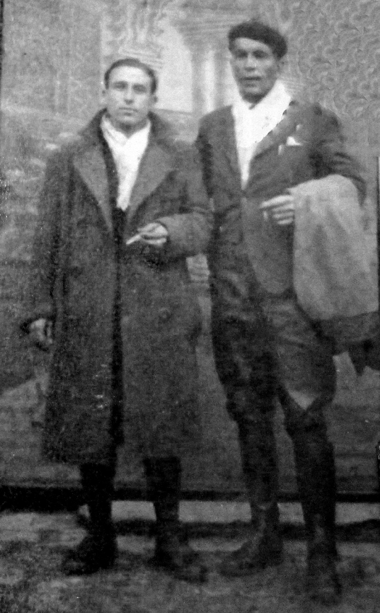

“PEPITO DE GUADALAJARA”
INTRODUCCIÓN
Carlos Blanco Manso nace el 10 de octubre de 1920 en Cendejas de la Torre (Guadalajara) y fallece en mayo del 2011 en Puerto Rico. Demasiados kilómetros, demasiados años. Es difícil, pues, trazar una biografía de hechos, lugares y años. Y no estaría de más hacerlo. Pero ello requiere tiempo, posibilidades y credibilidad.
Su padre era el herrero del pueblo. La familia estaba compuesta de varios hermanos que acabarían viviendo en Madrid. De sus relaciones en el pueblo nos citará algunas amistades a lo largo de su escritura: Manolo, hijo de una maestra; o sus compañeros de guerra, Julián y Braulio, con final aciago en la larga lista de fusilados por el franquismo. También resuenan en sus páginas los latidos de la actividad social y de su compromiso y hasta conflictividad. Posiblemente se aproximaría al partido comunista antes de 1936, como debe de recordar la familia en la nota “Ayant acquis très jeune une conscience politique il avait adhéré au Parti communiste”.

Desde el inicio del golpe de estado franquista en julio de 1936, se incorpora voluntario dentro de la Columna Guadalajara, siendo menor de edad durante toda la guerra civil. Columna que sería militarizada como la 49 Brigada Mixta. Su recorrido militar ocupa buena parte de estas páginas. Tras los combates de Brunete abandonaría la Brigada y ya, con su reemplazo, se incorpora a una compañía de tanquistas como conductor de T-26. En Pozoblanco tras el correspondiente cursillo en Archena.
Los últimos momentos de la guerra civil le llevan al puerto de Alicante. No pudo embarcarse en el Stanbrook y fue hecho prisionero. Un periplo de cárceles, desde los Almendros hasta Yeserías y de campos de trabajo en Alicante ocuparán su vida hasta finales de 1946. Es entonces cuando se evade y pasa a la clandestinidad.

En 1947, tras que los guerrilleros tomen el pueblo de Losa del Obispo, el 26 de enero de 1947, en una de las acciones más comentadas, Carlos Blanco se sumará a la La Agrupación guerrillera de Levante (AGL) con el pseudónimo de Pepito. En el 5º sector fue responsable de un grupo con base entre Ocentejo y Armallones.
,")
En abril del 1948, abandonaría la luche armada, dejando la AGL y pasando de forma clandestina a Francia junto con el guerrillero Francisco Jurado Cojonudo. En 1950 emigraría a Puerto Rico donde fallece en mayo de 2011 no sin mucho antes haber rehecho su vida familiar, con dos hijos como descendientes. Uno de ellos, Carlos ha sido quien nos ha facilitado el texto y las fotografías, y por ello le quedamos más que agradecidos.
MILICIAS
Desde hace un tiempo, estoy por sacar de mi cerebro una serie de acontecimientos que acaecieron en mi vida, y que por ser fuera de lo común es que voy a darlos a conocer. Muchas personas que conocen parte de esta historia, vamos a llamarla historia, me han aconsejado que no los guarde más tiempo escondidos. Por eso es que hoy voy a comenzar a relatar por lo menos 35 años de los 73 que tengo, los otros son comunes a cualquier otro ser, aunque no tan comunes.

Es rara la noche que no repaso algún capítulo de esta historia y puedo asegurar que la vivo como si fuera hoy mismo. Me refiero, por supuesto a las cosas transcendentales y algunas no tanto. No trato con eso ni ser héroe ni mártir, pero es que a mí me tocó vivirlas, y vale la pena que también las vivan conmigo por lo menos mi familia.
La historia hay que dividirla en varias etapas que aunque se relacionan son totalmente diferentes. La primera será la de los tres años de guerra. ¡Vamos a comenzar!
")
18 de julio de 1936. Ya tengo 15 años, cumplo los 16 en octubre, nací en 1920 en un pueblo agrícola de la provincia de Guadalajara, se llama Cendejas de la Torre.
.")
No me gusta ni mencionar su nombre. De hecho lo hago muy pocas veces, casi nunca. ¿Por qué? Pues sencillamente porque de él sólo recuerdo cosas muy poco agradables por no decir malas. A veces me llegan notas nostálgicas de la niñez, pero nada más. Recuerdo la primera vez que lo vi después de 40 años. Fuimos mi esposa y mis dos hijos. Nos llevó mi hermano. Cuando estábamos a las afueras del pueblo paramos para contemplarlo de lejos, y de pronto le dije a mi hermano: “Vámonos, no me interesa ver más”. Algo pasó por mi espíritu que se negó a seguir allí por más tiempo.
Hay algunas razones. Por ejemplo, cuando empezó la guerra llegaron unos individuos en un coche y se llevaron a un tal Benigno. Era de derechas, pero era buena persona. Cuando estaban montándolo en el auto yo les dije que por qué se lo llevaban. Llegó un tío mío muy respetado y les dijo lo mismo. Ellos dijeron que sólo le iban a dar un susto. Y así fue. A los 15 minutos volvieron con él. Las hijas y su esposa nos dieron las gracias a mi tío y a mí. Bueno, pues cuando a mí me iban a juzgar, fue mi madre a pedirle un aval para mí, y él tranquilamente le dijo que no podía hacer nada por mí.
La República no mató a nadie en ese pueblo, ellos mataron a seis, tres cuando tomaron el pueblo los fascistas y tres después de la guerra. Yo nunca renuncié a mi ciudadanía española. Sigo siendo español a pesar de que llevo fuera de España 50 y pico de años, pero si pudiera renunciar al lugar donde nací lo haría con mucho gusto. Volvamos al 18 de julio de 1936. En ese pueblo llegaba la luz a las 7 en verano, y la única radio que había era del secretario del ayuntamiento. Cuando dieron la noticia de la sublevación fascista se reunió todo el pueblo en el ayuntamiento para escuchar la noticia de Radio Nacional. Todo era confuso, pero lo que sí era cierto, que había una sublevación y que la guerra había comenzado al día siguiente. Y como a las 8 de la noche pasó una columna motorizada con dirección Guadalajara. Venían del norte por la carretera de Soria. Era la columna de Mola, uno de los artífices de la sublevación. Aquello era el final para todos los que la vimos. Iban a tomar Madrid, y ahí terminaba todo. Pero para sorpresa de todos, la columna retrocedió de madrugada con las luces apagadas. Nadie la vio pasar. Aquello nos dio un alivio dentro de las circunstancias.
El gobierno hacía una llamada al pueblo para defender la República, y el pueblo respondió. Se sofocó la rebelión en las principales capitales. En Guadalajara se formaron las milicias de Guadalajara y se instalaron en Jadraque, un pueblo que está a 8 kilómetros de La Torre, precisamente por la misma carretera por donde pasó la columna de Mola.
La sede del batallón de milicias era un olmo centenario y la fuente de la Tinaja. Esa fuente todavía existe. Fui a verla cuando fui a España por primera vez después de la muerte de Franco. Tan pronto llegaron las milicias a Jadraque, dos amigos míos, Julián y Braulio, se alistaron en dichas milicias. Cuando fueron al pueblo se pusieron en contacto conmigo para ver si quería enrolarme en las milicias. Ellos conocían bien mis ideales y yo les dije que por mi parte no había problema, pero como era menor había que pedir un permiso de mi padre. Hablamos con él y el permiso lo dio a través del secretario del ayuntamiento.
Me despedí de mi madre y de mis hermanos y me fui para nunca volver a vivir junto a ellos. Cuando llegamos al campamento me presentaron al que hacía de jefe de las milicias. Me tomaron la información pertinente y me asignaron un pelotón, el mismo donde estaban Julián y Braulio, los demás eran de por allí cerca de mi pueblo. ¿Cómo pasé la noche? No me acuerdo. En el mes de agosto, con el calor que hacía y 15 años creo que dormí bien. Pensaría un poco en mi casa, en mi familia, pero la guerra captaba casi todo el pensamiento. Había una psicosis de guerra que uno se olvidaba de todo.
Al día siguiente me dieron un fusil máuser. Era tan largo que cuando me lo ponía colgado del hombro me arrastraba. Me lo cambiaron por un mosquetón. Era más corto y era más apropiado para mi estatura. El ambiente en el campamento era de moral alta. Había mujeres jóvenes de Guadalajara. El 90% del Batallón eran de Guadalajara. Yo era el más joven del Batallón. No había trato especial. Las únicas que tenían trato especial eran las milicianas. Estuvieron poco tiempo, como un mes, después se las llevaron para la retaguardia.
La vida en el campamento era un tanto monótona. Tirábamos al blanco, hacíamos guardias, escuchábamos música en un gramófono de cuerda. Todo el día había música. Comíamos bien. Al principio de la guerra había mucha comida, al final no había nada.
Cada pelotón tenía un camión para transportarse. Esa tranquilidad no podía durar mucho. Estábamos en guerra. Y así fue. Un día salió el Batallón hacia Las Minas, pues habían tomado el pueblo los fascistas. Estaba cerca de Jadraque. Llegamos a las afueras del pueblo de Las Minas. Era la primera vez que íbamos a entrar en combate. Había nerviosismo, pero mucha moral. Dos pelotones desplegamos por el flanco de la izquierda. Dieron órdenes de hacer un parapeto de piedra cada miliciano y así lo hicimos. Estuvimos todo el día bajo ese sol de agosto y fue bien duro. En la parte que yo estaba no tiramos un tiro. Por el flanco derecho entraron en combate pues se oían descargas. Por la tarde regresamos a la fuente de la Tinaja. Había miles de comentarios, pero la realidad, que allí no pasó nada.
Empezó el frío y nos mudamos para el pueblo llamado Miralrío. El cuartel era la iglesia. Allí pasamos de ser milicias a ejército regular. Hubo que firmar unos blancos. De Miralrío, ya como ejército y con mandos militares, nos trasladaron a Mirabueno. Este pueblo está en la carretera de Zaragoza, y de allí al frente de guerra de verdad, a las parideras de Algora. Aquello era la guerra de verdad. Trincheras, guardias por la noche. La primera vez que sentí miedo fue cuando una mañana, al amanecer, las tanquetas italianas por poco nos dejan cercados. Avanzaron por la carretera de Zaragoza a Madrid. Nos retiramos rápido y evitamos el cerco. Recuperamos fuerzas y al otro día los rechazamos en plena Alcarria. Se estabilizó el frente. Ya empezamos a sentir la crueldad de la guerra: hambre, frío, piojos, miedo. En estos combates, una bala perdida que parece había chocado con una encina, vino dando vuelas y chocó con la correa de las cartucheras. Se la llevé de recuerdo a mi madre.
Al mes nos relevaron y fuimos a descansar a un pueblo, dos semanas. Y a la vez fuimos a relevar a otro batallón que estaba en el frente de Cogolludo. Ya era invierno. Aquellas trincheras eran profundas. Estaban hechas como para estar mucho tiempo en ellas. Allí pasamos la Nochebuena. El enemigo en algunas partes estaba a 100 metros. No podía sacar uno la cabeza porque te la volaban. El día de Nochebuena mi padre lo pasó conmigo. Allí lo pasamos muy mal. Por el día nadie podía acercarse al frente y la comida la traían por la noche en mulos. Llegaba fría, no había quien le metiera mano. Nos lo pasábamos con jamón york. Le cogimos asco. Tuvimos que hacer un pacto con los fascistas para poder salir ambos a asearnos, que era sacarse los piojos de encima. Por la noche había dos horas de insultos de parte y parte. Aquello era para morirse de risa a pesar de las circunstancias. Allí se escuchaban los insultos más raros que uno puede imaginarse. Una noche que había una neblina espesa un tipo de los nuestros estaba de guardia y parece que era fascista, o no se sabe el porqué, trató de pasarse con el enemigo. Se despistó con la niebla y regresó a nuestras trincheras dando vivas a Franco y hablando pestes de los rojos. Le tiraron el cordel y lo mordió. Cuando vio la cara de los rojos como los llamaba él, yo no lo vi pero creo que se puso colorao a pesar del frío. Se lo llevaron al capitán y no se sabe qué sería de él. No le iría muy bien. Deserción frente al enemigo y estando de guardia es un delito grave. Pasamos un invierno cruel en el frente de Cogolludo. Después de dos meses llegó el relevo. Aquella noche fue la más feliz de la guerra.
El relevo se hizo en completo silencio y orden. Duró como dos horas y emprendimos la marcha hasta donde estaban los camiones que nos llevaron a Guadalajara. A la una, más o menos, estábamos entregando las armas y después cada uno durmió donde pudo dentro del cuartel. Yo recuerdo que dormí un poco en la cabina de un camión pues me dieron asco los camastros sucios que había. Al otro día por la mañana nos dieron el pase para coger dos semanas de vacaciones. Yo me fui a Jadraque que era donde estaban mis padres. Ellos tuvieron que abandonar el pueblo que fue ocupado por los fascistas. Yo, el primer año de la guerra, lo pasé en los frentes de Guadalajara, que había como cuatro frentes.
Al próximo frente que fuimos a relevar fue al frente de La Toba. Allí yo fui como enlace del capitán. Tenía un caballo para ir a buscar el correo y la correspondencia militar. Me duró poco porque a las dos semanas de estar en este frente se produjo la ofensiva italiana por la Alcarria. Nosotros estábamos como en una cuña y tuvimos que salir más o menos en desbandada, pero nos reagrupamos por la tarde y establecimos un frente más o menos fuerte. Nos relevaron y fuimos a Cuenca a coger un descanso para después ir al frente de Aragón. Específicamente a Barbastro (Huesca). Allí estuvimos una semana y fuimos al carrascal de Alorre. Este era el frente. En el carrascal nos metieron un bombardeo inmisericorde. No había defensa aérea. Tuvimos suerte. Hubo pocas bajas, pero se quebrantó un poco la moral.
Había una ofensiva contra Huesca y mi batallón tenía la misión de coger una cota que dominaba la carretera de Jaca a Huesca, para cortar la comunicación entre ambas ciudades. Ese frente estaba estático desde que empezó la guerra. Ya habían pasado como diez meses. En ese frente había anarquistas. Creo que los domingos jugaban al fútbol con los franquistas. Nos dieron las raciones de rancho frío y tomamos posiciones junto con los que allí había. Como a las cinco de la mañana empezaron un bombardeo con cañones que duró como media hora. Fue un bombardeo fuerte. Nosotros creíamos que allí no había quedado nada en pie, pero cuando saltamos las trincheras nuestras nos recibieron con fuego de ametralladoras que daba miedo. Yo vi un promontorio de tierra donde habían hecho carbón y traté de llegar allí pero no pude. Sentí un calambre en la pierna izquierda. Sabía que estaba herido, pero no sabía dónde ni cuánto. Reaccioné rápido a pesar de que aquello era un infierno de balas y explosivos. Me quité el correaje. Lo dejé junto con la manta, el macuto y el fusil, y arrastrándome llegué a las trincheras que estaban como a 50 metros. Me preguntó un tipo de Sanidad que si podía ir solo hasta el primer puesto de socorro. Le dije que tenía la pierna dormida pero que trataría de llegar. Me deslicé por una trinchera de evacuación y llegué al puesto de socorro. Me cortaron el pantalón y aparecieron las heridas. Una en el muslo y la otra en la bajada de la pantorrilla. No eché una gota de sangre. Fue una bala explosiva que cuando choca explota y quema el cerco. La herida del muslo tenía como 3 cm. de larga por 1 cm. y pico de profundidad. Me pusieron una venda y una antitetánica y me dijeron que de momento no podían hacer nada más, que tenían que atender heridas graves.
Aquello fue algo tremendo. No cesaban de llegar heridos en camillas. Se los llevaron las ambulancias a los hospitales cercanos. Como a las 10 de la mañana, las fuerzas nuestras habían ocupado la cota, pero la ofensiva a Huesca había fracasado. La aviación franquista fue la responsable del fracaso. Mi batallón quedó totalmente diezmado. Hasta ese combate no habíamos sufrido bajas significativas. Cuando todo había terminado en el frente, esto era por la tarde, nos trasladaron a los heridos leves a un tren hospital y nos llevaron a Villafranca del Penedés, en Barcelona. En el camino murieron bastantes. Llegamos al hospital al otro día como a las dos de la tarde. En el hospital me hicieron una limpieza de las heridas. Y allí fue que me di cuenta real de lo que tenía eran heridas bien profundas con desgarros feos.
Como no había antibióticos usaban sulita. Por la mañana, cuando me curaban me llenaban la herida del muslo que era la profunda con gasa y sulfita. La de la bajada era un corte profundo. Allí estuve un mes y medio. Y me dieron el alta y cura, y me fui para Guadalajara donde estaban mis padres. Todos los días iba a curarme al hospital hasta que me dieron el alta definitiva. Mi Batallón, después de la debacle de Huesca, lo reorganizaron con reclutas nuevos y lo trasladaron a Brunete. Allí fue donde me incorporé de nuevo. En mi compañía no quedaban más 10 o 12 de los viejos. El capitán perdió un brazo. En Brunete acababa de terminar la batalla más encarnizada de la guerra o una de las más encarnizadas.
Un día salimos una patrulla a recoger armas abandonadas. Los franquistas estaban lejos de Brunete y nos movíamos sin peligro. El terreno es llano, con algunos barrancos y montículos. Encontramos un arroyo que corría transparente. El agua estaba tibia. Era verano, bebimos agua y patrullamos hacia arriba. Cuando salió una nube de moscas de todos los tamaños. Algo raro había por allí. Efectivamente, un poco más arriba había un muerto en estado de descomposición. Prácticamente en el arroyo. Mi estómago no aguantó. Me acordé del agua que había bebido y empecé a vomitar. No comí en tres días. Por poco me muero. Sentía una depresión tan grande, unida a una melancolía recordando cuando se formó el Batallón, aquellos primeros días de entusiasmo y moral. Ahora todo era nuevo. La gente era buena, pero no lo mismo que antes. Cogí la pluma y le escribí a mi madre para que fuera a la comandancia y me reclamara por ser menor de edad y estar herido, pues la herida estuvo fresca por espacio de un año. Ahora, a los 70 años, todavía está sensible la piel. La reclamación la aprobaron y a los 15 días ya estaba en Guadalajara.
El día que me marché de la Compañía dejé dos hermanos, Braulio y Julián. A esos no les pasó nada en la batalla de Huesca. Se despidieron sin decir una palabra, pero yo sabía que a ellos no les gustó mi decisión. Pero ya estaba tomada. A Julián jamás lo volví a ver. Lo fusilaron en Guadalajara en 1941, justo cuando yo fui trasladado de Alicante a Guadalajara. No pude verlo.
En la vida civil empecé a trabajar en una fábrica de guerra. Hacíamos picos para los zapadores. Fue muy poco tiempo, creo que unos cuatro meses. Aquí estaba por que en el frente todas las noches había una alarma. A veces bombardeaban. La mayoría lo hacían para molestar a la población civil pues allí no había militares. El único objetivo era el fuerte donde yo trabajaba y en el tiempo que yo estuve allí nunca bombardearon. Una semana que yo trabajé de noche, mi madre me dejó durmiendo pues salí de trabajar a las 6 de la mañana. Ella fue a buscar la ración que daban semanal. Todo estaba ya racionado. Le dijo a una vecina que si sonaba la alarma que me llamara. Un día vino la aviación fascista y bombardeó desde la estación hasta mi casa. La señora, cuando oyó la sirena, salió disparada para el refugio y a mí no me llamó. Me despertaron las bombas y los cristales rotos. Salí de la cama tal y como estaba. Cuando iba por la escalera me di cuenta que estaba casi desnudo y las bombas cayendo. Me vestí como pude y salí para el refugio. Allí estaba la señora. Cuando me vio se quedó fría. Se disculpó diciéndome que no se acordó de llamarme. Mi madre le formó una bronca.
Un buen día movilizaron a mi quinta. Yo decía para mí que fenomenal: ahora yo veterano, herido de guerra, voluntario de los primeros milicianos, voy a hacer de recluta; pero la suerte, que ha estado conmigo, esta vez no me faltó. Me encuentro a un tipo y me dijo: “Movilizaron tu quinta”, “Lo sé”, “¿Qué vas a hacer?”, “Pues presentarme”, “Me dijo un amigo en el Comité de las Juventudes que estaban solicitando gente de confianza para tanques”. Le pedí la dirección de reclutamiento en Madrid y para allí fui. Me preguntaron una serie de cosas sobre mí. Cuando les expliqué mi trayectoria en la guerra con papeles, también mi afiliación política, me reclutaron en el acto. Fui para mi casa, busqué algunas cosas y regresé. No me quise despedir de nadie, ni siquiera de mi novia que trabajaba en el fuerte.
TANQUES Y CAUTIVERIO
Salí de Madrid directamente a la escuela para tanquistas que estaba en Archena (Murcia). Un bonito pueblo. Allí no se notaba que había guerra. El curso fue rápido. Dos meses, más o menos. Cubría todo lo relacionado con el tanque, desde mecánica hasta manejo de la torreta equipada con un cañón y una ametralladora.
En este curso, la persona que no retenía en la cabeza lo mandaban para infantería. Del grupo que salimos de Madrid, quedó reducido más o menos a la mitad. Una vez terminado el curso, que lo terminamos en un campo de pruebas, fuimos directamente al frente. A mí me destinaron a Pozoblanco (Córdoba). En la base había 10 tanques. Todos tenían su tripulación, así que nos quedamos como reserva de la base, pero allí nos compenetramos más con la organización y operación de una base de tanques. Los tanques estaban camuflados debajo de las encinas. Además había una guardia en el perímetro exterior de la base, noche y día. En invierno, el guardia llamaba cada cuatro horas para encender el motor. Ya la comida estaba escasa y se notaba que la cosa se ponía cada vez peor. Se realizó una operación en gran escala.
Allí intervino mi compañía. Se rompió el frente enemigo por uno de los flancos después de un día de combate. Uno de los conductores se enfermó y me asignaron a mí para ocupar su posición. Era la primera vez que tenía la oportunidad de poner en práctica lo que había aprendido en la escuela. Aunque un poco nervioso reaccioné bien y me sentí a gusto dentro de un armazón de acero. Penetramos la retaguardia enemiga sin encontrar ningún tipo de resistencia. Interceptamos un autobús que venía de Córdoba hacia Badajoz sin saber nada de lo que allí estaba sucediendo. Siguió hacia Badajoz.
Esta ofensiva tenía el propósito de distraer fuerzas enemigas que estaban presionando en el frente del Ebro. Pero salimos de este bolsón a los 4 días porque no pudieron ampliar la brecha por donde nos colamos como 50.000 efectivos. El primer día de la ofensiva en esta operación murió un sargento. La torreta la perforó un antitanque y le voló la cabeza. Los otros dos componentes del tanque se salvaron. Esos proyectiles antitanque sólo perforan, no explotan, por eso que el único que murió fue el jefe-carro, que lo cogió por la cabeza. Hubo que esperar a la noche para sacar el tanque con el muerto. De allí pasamos al frente de Toledo, cerca de Mora de Toledo. Allí me dieron un pase de 10 días para ver a mi familia que seguían en Guadalajara. Cuál sería mi sorpresa cuando me enteré del golpe de Casado contra el Gobierno o la Junta de Defensa de Madrid. Un tío mío, cuando me vio con el uniforme de tanquista, me dijo: “Quítate ese traje y vete para Alicante, mucha gente está saliendo por ese puerto”, “Mi juventud y lealtad a la República no me permiten hacer eso”, y volví a la base de Toledo.
Cuando llegué, me encontré con ese panorama en Mora de Toledo. Aquello era el final. Como tres días antes de terminar la guerra, una mañana, el capitán sonó el silbato y todos nos pusimos en marcha. El capitán salió primero. Estábamos en un olivar. Para sorpresa de todos, en vez de coger para el frente enfiló hacia Mora de Toledo. Allí la moral bajó a cero. Todo estaba perdido. Tres años de muerte, sufrimiento, para nada. El capitán viró hacia un olivar, como 5 kms de donde habíamos salido y allí nos estacionamos. El capitán me llamó a mí. Me entregó un sobre cerrado y salí hasta otra base de tanques que había cerca de allí. Para ello usé un carro blindado que tenía la Compañía pues era más rápido. Me acompañó otra persona. Había que regresar para atrás, justo por donde habíamos pasado hacía una hora. Yo sabía que el frente se había derrumbado y que los fascistas venían hacia Mora de Toledo, así que después de recibir las instrucciones del capitán, salí a toda velocidad hacia el puesto de mando de las fuerzas blindadas. En media hora llegué. Me entregaron otro sobre cerrado y regresé a mi base. Cuando estaba entregando el sobre al capitán, uno de nuestros tanques estaba disparando a dos motos con sidecar italianas. Estos tipos eran de la avanzada fascista. Lo que no sabían, que allí estábamos nosotros. Ellos habían roto las líneas republicanas y seguían avanzando sin resistencia. Trataron de dar la vuela en la carretera, pero creo que no pudieron pues estaban bajo el fuego del tanque. Salimos del olivar en fila india y seguimos hacia Mora de Toledo. Liberamos los presos que tenían los de la Junta de Casado y seguimos hacia el sur. La aviación fascista nos sorprendió en un lugar que no había ni un árbol para camuflarnos. Se colocaron en posición de combate y nos bombardearon como les dio la gana. Ni una sola bomba alcanzó un tanque. Era inconcebible que no nos arrasaran. No teníamos ningún tipo de defensa antiaérea. Más adelante, después del susto, el capitán nos reunió y nos dijo: “Estáis libres para hacer lo que cada cual quiera”. Nos aconsejó también diciéndonos: “En Alicante están saliendo barcos hacia el norte de África, el que quiera puede ir hasta allí”. Y se despidió con lágrimas en los ojos. Allí se desintegró la 2ª Compañía de Tanques de la 1ª División de Fuerzas Blindadas.
La depresión se apoderó de todos nosotros. Nos abrazamos con verdadera emoción. Sabíamos lo que nos esperaba. Allí cada cual decidió lo suyo. Yo, junto a tres compañeros más, decidimos ir hasta Alicante. Cogimos el carro blindado que era un camión blindado 3HP ruso con torreta giratoria equipada con una ametralladora y emprendimos marcha hacia Alicante. Estuvimos todo ese día y la noche siguiente hasta que llegamos a Orihuela, al amanecer.
Ese pueblo estaba ya en poder de los fascistas. Trataron de asaltar el blindado y tuvimos que abrir fuego. Salimos del pueblo y tiramos a un río el carro blindado. Pasamos el día en un monte cercano a Orihuela. Nos pasamos el día sin comer, oyendo tocar las campanas todo el día. Ya estaban las chusmas celebrando. Aquello era desesperante. Cuando llegó la noche nos fuimos hasta Elche. Buscamos a dos compañeros pero no los localizamos. Allí pasamos la noche. Era tan grande la tensión que yo no recuerdo nada sobre esa noche, ni sé si dormí o no.
A la mañana siguiente salimos en un tren hacia Alicante. Aquello era terrible. La gente se montaba, se apeaba, no sabían qué hacer. El tren repleto hasta el techo salió para Alicante. En el camino un tipo empezó a dar vivas a Franco. Lo tiraron por una ventanilla. En el puerto de Alicante la situación era de total incertidumbre. Nadie sabía si llegarían los barcos o no. Los barcos se veían en el horizonte pero no se acercaban al puerto. Los submarinos alemanes merodeaban por allí discretamente, pero se veían. Ya era muy tarde para que nos recogieran. Empezó la desmoralización y también los suicidios. Cada rato sonaba un disparo. Llegaba la ambulancia y recogía los muertos. Aquello se convirtió en un caos. Todavía los fascistas no habían ocupado Alicante. Se levantó una barricada frente al muelle con sacos de lentejas. Creo que a los tres días de yo llegar al puerto ocuparon Alicante fuerzas del Tercio. Se parapetaron frente al muelle y vigilaban la playa.
De allí ya no se podía salir. Hubo gente que por la noche trataban de salir. Por la playa se oían disparos. Para mí, los cuatro días más terribles de mi vida fueron los que pasé en el muelle de Alicante. Repartían alguna comida enlatada, pero se acabó y los dos últimos días comíamos lentejas hervidas.
En el muelle existía algún tipo de organización, pero al final aquello era un caos. Los militares fascistas pidieron un representante nuestro para negociar la salida. Allí había mujeres y niños. Nuestro portavoz, después de hablar con el franquista, se subió encima de unos sacos. Nos reunió casi a todos, y con un altavoz nos dijo que teníamos una hora para entregar todas las armas, de lo contrario iban a ocupar el muelle por la fuerza. En la alocución, dramáticamente dijo:”Si no hubiera mujeres y niños, sería mejor morir peleando, pero hay que respetar esta gente inocente”.
Tan pronto se entregaron las armas, que consistió en echarlas en un montón dentro del muelle, entró un militar franquista con una tremenda escolta y nos dio instrucciones de cómo desalojar el muelle, advirtiéndonos que éramos prisioneros. Primero salieron las mujeres y los niños. No sé dónde se los llevaron. A continuación, y en fila india, salimos el resto. Bajo fuerte escolta nos llevaron a un campo de almendros en la carretera de Valencia, a las afueras de Alicante. Mi grupo llegó al campo por la tarde. Allí ya había gente. Establecieron una vigilancia alrededor de dicho campo.
La fatídica primera noche como prisionero de guerra fue horrible. Hambre, frío, depresión. Yo siempre había dicho que, al menos que me cogieran inconsciente, a mí no me hacían prisionero. Me tenían que matar tirando tiros. Y ahora estaba prisionero sin poderme defender. El puerto de Alicante fue una trampa ya que los barcos no podían acercarse al puerto, pues los submarinos alemanes estaban allí. Aquella primera noche en el campo de concentración hubo muchos acontecimientos. Como a las 9 o 10 de la noche empezaron a oírse disparos. Todo el mundo estaba en el suelo ya que las balas pasaban silbando por encima de uno. Aquella noche se fugaron muchos, o por lo menos trataron de hacerlo. A mí me invitaron, y no lo hice porque tenía una peladura en la espinilla derecha, producida por un resbalón que di en el tanque cuando nos sorprendió la aviación en la carretera de Mora, tal y como relaté anteriormente. No soportaba el dolor, pero como teníamos tantos dolores, ese era uno más. La depresión era total. Mucha gente se separó de sus esposas e hijos. Cuando salimos del puerto, hasta yo me desconecté de mis compañeros tanquistas. Me sentía tan solo a pesar de haber tanta gente, que la mente se quedaba en blanco.
En el mes de abril todavía hace frío en Alicante. Para poder pasar la noche y dormir algo a pesar de la caótica situación en que nos encontrábamos, nos uníamos tres o cuatro. La verdad es que yo no recuerdo si dormí o no, y si lo hice fue bien poco. Se acabó la noche negra y salió el sol, pero no nos dieron nada de comer. Ya la situación era desesperante. Empezamos a comernos las almendras que estaban en leche. Cuando acabamos con las almendras nos comíamos las hojas, y por último nos comíamos las cortezas de los troncos. Creo que los almendros se secaron. Yo no recuerdo si estuvimos un día o dos en este lugar. De allí nos trasladaron a la plaza de toros en grupos de 100. Cuando yo llegué a la plaza de toros ya el ruedo estaba casi lleno. Había un silencio sepulcral y no era para menos. Cuando miré para los tendidos o gradas, había como seis ametralladoras apuntando al ruedo. Ya a las 6 de la tarde la plaza estaba que no cabía nadie más. Más o menos a esa hora retiraron las ametralladoras, pero por la mente de todos nosotros pasó el episodio de Badajoz en donde ametrallaron en la plaza de toros no sé cuántos miles de republicanos cuando tomaron esa ciudad. Por allí corrió el rumor que fue un miliar italiano el que evitó que nos ametrallaran en la plaza de toros.
No recuerdo bien si fue ese día o al otro cuando empezaron a organizarnos en grupos de a 100 para coger los alimentos y demás cosas. Esto consistió, por espacio de un mes, de una lata de sardinas y medio chusco de los que dan en el ejército. El pan tenía de todo menos harina de trigo, pero qué bueno estaba. A la hora de repartir la ración de comida, que era cada 24 horas, a las 11 de la mañana se formaban unos líos. La gente buscando al jefe de su grupo, que era el que traía la ración del día. Eso fue los primeros días. Después ya todos nos conocíamos. El teniente de la tralla era el jefe. Le pusimos ese nombre porque andaba con una tralla larga y le gustaba dar trallazos a los prisioneros. Era un hijo de puta que se metía por el medio de todos y empezaba a dar trallazos a diestra y siniestra. Yo nunca vi persona tan sanguinaria como esa.
A través de unos altavoces pedían que diéramos nombre y lugar de nacimiento, amenazando con fusilar al que no lo hiciera. Yo fui uno que nunca di mi nombre, y la suerte me acompañó pues nunca me detectaron. Por la noche, y en la parte de arriba de la plaza torturaban a la gente. El que subía para arriba jamás se le volvía a ver. A nosotros no se nos permitía estar en los tendidos a menos que hubiera alguna inspección, pues los falangistas venían casi todos los días y de diferentes partes de España, buscando sus presas. Así sucedía: sonaba el silbato, formábamos en los tendidos en grupos de 100, los falangistas pistola en mano iban buscando grupo por grupo, cuando encontraban lo que querían lo sacaban del grupo a patadas, insultos, vejaciones. Yo relato esto y tiemblo de rabia, porque aquello era un crimen. Ninguno llegaba a su destino. Los fusilaban en las carreteras.
Un día pasó algo que vale la pena relatar. Resulta que en el patio de caballos hicieron unas trincheras, que era donde hacíamos nuestras necesidades fisiológicas. Un tipo se enteró que los falangistas de su pueblo estaban en la plaza a la caza de seres humanos. Ese tipo se metió en una trinchera media de excrementos y pasó la cacería metido allí. No tenía otra alternativa. Cuando sonaba el silbato, todo el mundo formaba en los tendidos y revisaban todo, inclusive el patio de caballos. Este individuo se salvó de esta cacería, puede que después no tuviera tanta suerte.
Aquello fue tremendo. Cuando se fueron los falangistas y empezamos a usar el patio de caballos, encontramos a ese tipo limpiándose lo más gordo. Le ayudaron a ponerse en condiciones de salir al ruedo. Como la dieta era sardinas y pan, empezó a afectarnos a todos un estreñimiento enorme. Allí todo el mundo tenía una llave de abrir sardinas. Con este instrumento nos ayudábamos a realizar esa necesidad fisiológica, sacando lo que el organismo no podía. El día que nos dieron la primera comida caliente fue otro episodio. A la mayoría de la gente le dio diarrea. No nos dejaban ir al patio de caballos que era donde hacíamos nuestras necesidades. Esa noche tuvieron que abrir la puerta, pues de lo contrario el ruedo se hubiera convertido en una piscina y no de agua.
Como se aproximaba la temporada de toros, nos trasladaron al castillo de Santa Bárbara, en el mismo Alicante. La plaza de toros tenían que repararla pues quedó maltrecha después de la invasión republicana. En el castillo la vida era un poco más llevadera, pues ya no estábamos a la intemperie. Allí pasamos el verano. Cuando trasladaron los restos de José Antonio, se congregaron en Alicante miles de falangistas. Desde lo alto se sentía el murmullo de esa gente que querían asaltar el castillo. El jefe de la guarnición nos dio órdenes una noche para que nos protegiéramos dentro de los dormitorios, porque los falangistas querían subir a asaltar el castillo. Él mismo reforzó la guardia. Pasamos tres días de incertidumbre, pero por fin se fueron y todo volvió a la calma.
En el castillo empezaron a trasladar a sus respectivas provincias cientos de prisioneros reclamados para ser juzgados, si es que a esto se le podía llamar juicios. Ya del grueso que salió del puerto íbamos quedando cada día menos. Tal vez los que nunca dieron el nombre. Del castillo de Santa Bárbara, y bajo una estrecha vigilancia nos llevaron a la estación de tren. Allí nos esperaba un tren mercancías. Nos metieron como ganado a los vagones y nos llevaron a Elche. Nuestra residencia allí fue unos antiguos almacenes con palmeras en el patio. Una noche me subí yo a una para tumbar un racimo de dátiles. Estaban medio verdes, pero qué buenos estaban. Allí mataron de un disparo en la cabeza a un diputado socialista por Cáceres. El disparo vino de una garita donde hacía guardia un soldado. Lo estaban esperando cuando entrara al toilet. El director de este campo de concentración nos preguntó la razón por la cual todavía no nos habían reclamado para ser juzgados o salir libres.
Ya había pasado más de un año desde que nos hicieron prisioneros en el puerto de Alicante. Tuvimos que dar nombre y dirección, y esta vez ya no había alternativa. Había que decir la verdad. A la semana ya me habían reclamado de Guadalajara para ser juzgado allí. Aquí empezó otro episodio nuevo.
Fui trasladado a Guadalajara. Cuando llegué me encontré con mis antiguos compañeros de milicias. Tres estaban condenados a muerte. Dos de ellos los fusilaron a los dos meses de yo llegar. El otro se quedó allí, pero con pena de muerte. Como a los tres o cuatro días de yo llegar, me llamaron para declarar. Era un capitán de infantería. Me leyó el pliego de acusaciones que eran muchas y bien malas. Yo me defendí como pude ya que casi todo de lo que me acusaban era falso, pero no me presionó ni me ofendió en ningún momento. Él me preguntaba y yo le contestaba. Hago esta aclaración porque cuando llegué aquí mis compañeros de infortunio me dijeron que ya no daban palos para sacar declaraciones. Antes sí, era a palo limpio.
A la semana siguiente me enviaron un abogado defensor. Un teniente del ejército, para que tuviera viso de legalidad el proceso. Todo esto lo manejaban los militares. El delito principal, además de otras acusaciones fabricadas, era de adhesión a la rebelión. Fueron ellos los que se rebelaron contra un gobierno legalmente constituido, y sin embargo fue a nosotros a los que nos acusaron de rebelión.
Una vez terminados estos trámites había que esperar el juicio. Esto se demoró como dos años, gracias a un capitán que trabajaba en el juzgado militar y que conocía a mi madre, porque ella trabajaba en su casa haciendo limpieza. Mi madre se quedó solo con cuatro hijos, ya que a mi padre también lo encerraron, así que tenía que hacer de todo para sacar adelante la familia, desde vender bocadillos en el tren, hasta limpiar casas. A mí no me podía ayudar en nada, a pesar del hambre que pasaba, porque en Guadalajara es donde más negras lo pasé después de los primeros días del Campo de los Almendros, y de la Plaza de Toros. La comida era muy mala. Pero lo peor es que era muy escasa. Yo vi gente en las duchas que los huesos les rompían la piel en algunas partes del cuerpo.
Antes de ir a juicio estaba en lo que eran los talleres. Estábamos como sardinas en lata. A veces, por la noche, sentía uno como que le faltaba el oxígeno. Por el día, al menos que lloviera, tenías que salir al patio obligado, no importa el frío que hiciera. A pesar de la desnutrición tenías que estar en movimiento para evitar el frío. Los guardias penales eran unos sanguinarios. Escogidos para maltratar. El hambre, el maltrato eran tolerables. Lo que dolía de verdad era cuando sacaban gente a fusilar. Durante los años 1942- 43- 44, las sacas eran todas las semanas, por lo menos una vez, a veces 2 y 3veces por semana. A las 5 de la mañana empezaban los vivas a la República, etc. Aquello era terrible.
Las cárceles franquistas todas tenían un denominador común: hambre, maltrato, frío en invierno y calor en verano. En la cárcel de Guadalajara es donde más tiempo pasé. Para no caer en la monotonía voy a resaltar los sucesos más dramáticos. Mi madre me visitaba cada 15 días. En la segunda visita, para sorpresa mía, vino acompañada con Pili, una novia que yo tenía de la guerra. Nos queríamos mucho. Cuando se despidió de mí, le dije: “Si todavía no me has olvidado, trata de olvidarme, pues yo no sé si salvaré el pellejo, y si lo salvo, esto va a ser para largo”. Jamás volví a verla.
La vida seguía en la cárcel monótona y desesperante. El paisano mío y compañero de las milicias seguía condenado a muerte. Estaba en la sección de los condenados a muerte. No tenían contacto con el resto de los prisioneros. Los domingos tenían visitas. Yo lo visitaba algún domingo que otro. Era deprimente ir a verlo. Uno no sabía de qué hablar. Yo trataba de darle ánimos diciéndole que le rebajarían la pena de muerte a 30 años, pero él sabía que lo iban a fusilar.
Ya habían fijado la fecha para el juicio. Confieso sinceramente que tenía miedo. Mi madre siempre me decía que el teniente defensor le aseguraba que no me iban a condenar a muerte por ser menor de edad. Que la condena serían años, no sabía cuántos. A pesar de eso, uno siempre piensa lo peor y el pelotón de fusilamiento siempre estaba en la mente. Así pasaba muchas noches.
El día antes del juicio, los compañeros del dormitorio me prestaron una chaqueta y una camisa. Me puse el cuello de la camisa por fuera para aparecer más joven. Cuando llegamos a la corte militar, digo llegamos porque ese día fuimos a juicio como 7 personas, había dos mujeres. Estaban mi madre y mis hermanos. Fue un juicio rápido. A cada uno de los encausados le leyeron los cargos. Te preguntaban: “¿Culpable o inocente?”, y tú contestabas, por supuesto: “Inocente”. El jurado compuesto por militares se retiró a deliberar. No tenían nada que deliberar, porque cuando el fiscal, un capitán, nos leía los cargos, al final decían: “Hechos probados”, pero había que hacer ese teatro.
Cuando me nombraron a mí, me puse de pie y leyeron la sentencia:”30 años de reclusión mayor”. A pesar de los 30 años, fue la mejor palabra que oí en mi vida. Ese día hubo dos penas de muerte. Creo que esas penas de muerte fueron conmutadas.
Cuando había juicios, los compañeros esperaban el regreso para ver cómo salíamos. En mi caso me abrazaron, me felicitaron, porque 30 años, como dijo Gardel, no es nada. Después de que te juzgan pasas a otro dormitorio a donde están clasificados por años de condena. Yo fui al 2º dormitorio donde había gente con 20 años y 30 de condena. Este dormitorio o galería estaba en la parte superior de la institución. Me pusieron ayudante del jefe de dormitorio. Mi labor era la limpieza de la galería y el baño. Me daban doble ración de comida. No tenía que bajar al patio obligado, en fin, estaba mejor.
Allí pasé el susto de mi vida. Yo sabía de gente con 30 años de condena que los habían fusilado. Una mañana, como a las cinco de la madrugada, empezaron los gritos, maldiciones, vivas a la República, etc. Había ejecuciones. Un guardia penal abrió el portón de hierro de la galería y llamó: “Carlos Blanco”. Estoy recordando ese episodio y siento casi lo que sentí ese día, y esto pasó hace muchos años. Me tiembla la mano con lo que escribo. Yo dije: “Me van a fusilar”. Los compañeros que estaban a mi lado me daban ánimo. Yo estaba tan asustado que empecé a recoger el petate, y gritó el guardia desde la puerta: “No recojas nada y vístete”. Ahí fue que un compañero me dijo: “Tranquilo, que no te va a pasar nada”. Seguí con el guardián hasta lo que llaman el rastrillo y allí sí que por poco me da un ataque. Me encontré con Braulio, el que estaba condenado a muerte, que lo iban a fusilar. Nos abrazamos. Él empezó a desahogarse con toda clase de epítetos. No los digo, pero pueden imaginarse. Yo no hablé nada. Lo último que me dijo fue: “Dile a mi madre que muero como un macho”. Nos despedimos con un abrazo y regresé a la galería llorando. Cuando llegué me estaban esperando para abrazarme, pues ellos creían que jamás volverían a verme. Ese día la depresión se apoderó de mí, y mi mente no se apartaba del rostro de un condenado que iba a ser fusilado aquel amanecer. Braulio Ortega era de mi pueblo, y compañero en las milicias. De los tres que ingresamos en agosto de 1936, sólo quedo yo.
La vida siguió rutinaria. Yo me recuperé de aquel trauma. Como a los 6 meses de haber sido juzgado se acabó la rutina carcelaria. Me enviaron al pantano del Alberche a trabajar. Era verano y aquello era como estar libre. En la cimentación del río sólo se podía trabajar en verano. Había tres turnos. Yo tuve la suerte que me enseñaron a manejar una grúa con la que sacábamos la arena. Trabajaba de día. En el campamento el Alberche pasé un verano bastante bueno después de lo que había pasado anteriormente. Los domingos no se trabajaba, los familiares de los reclusos pasaban el día con ellos. Mi madre vino un par de veces a verme. Los guardianes nos decían que no podíamos retirarnos del campamento, pero los arriesgados como yo nos íbamos a los llanos de Cazalegas a buscar uvas, higos y todo lo que encontrábamos en el camino. Regresábamos a las 4, más o menos. El contratista le daba los comestibles al campamento, pero aquello era basura. Pasábamos hambre.
Se acabó el verano y la cosa cambió. El frío era terrible. Como en invierno no se podía trabajar en el río, trabajábamos en una carretera de tierra para hacer los terraplenes de los lados de la represa. Con la llegada del invierno la vida en el campamento se hizo casi insoportable. Cuando miraba uno la carretera le daban escalofríos, cargamos las vagonetas con tierra casi congelada. Los contratistas que estaban haciendo esta etapa de la represa eran dos hermanos a cual más malo. Vivían allí, en el terreno de la represa.
Tenían un rebaño de ovejas pastando por allí, por la noche lo metían en un corral. Dos amigos y yo salíamos por una ventana de noche, los guardianes se encerraban de noche y no salían hasta el otro día. A esa ventana la habíamos forzado un barrote, pero cuando volvíamos la dejábamos que nadie notaba nada. Saltábamos la cerca del corral y nos llevábamos una oveja. En la orilla del río la preparábamos. Tirábamos al río lo que no servía, y el resto lo guardábamos envuelto en unos paños blancos con sal en una cueva que había en un barranco. Eso lo hicimos varias veces. Inclusive una noche fuimos a Cazalegas y nos comimos media oveja en casa de unos amigos. El pueblo de Cazalegas estaba cerca del campamento, y venía mucha gente los domingos a vernos. Tuvimos algunas actividades. El día 24 de septiembre, que es la patrona de los presos, presentamos una obra de teatro. Allí había un tipo que sabía de eso. Yo canté un par de canciones. Por eso teníamos amistades en el pueblo. Un día el director del campamento nos reunió y nos dijo que había recibido quejas del alcalde en el sentido de que habían visto presos por la noche en el pueblo, y que había gente armada dispuestos a disparar contra cualquier persona extraña que vieran por la noche en el pueblo. “Es un delito alejarse del campamento y mucho más por la noche. Si lo han hecho, no lo hagan, por su bien”. Suspendimos las salidas. A mí se me acercó un día un compañero. Él era un líder, y me dijo: “¿Tú estás dispuesto a fugarte?”. Le contesté: “¿Cuándo?”. Él me dijo: “Esto es una fuga en grande. Van a asaltar el campamento un grupo de guerrilleros que operan en unas sierras cerca de allí. Eso tiene que ser totalmente secreto. Yo he escogido las personas en las que más confianza tengo. Tú no preguntes y espera que yo te comunique lo que hay”. Eso nunca cuajó, y yo no soportaba aquello.
El médico del campamento era amigo mío, y yo dormía al lado de la enfermería donde él dormía. Un día le dije: “Don Aurelio, ayer tuve un golpe de tos y boté sangre, ¿qué cree usted?”. Y me dijo: “¿Tú quieres irte de aquí?”. “Sí señor”, le contesté. “Te voy a enviar a Talavera de la Reina para que te hagas la prueba de la tuberculosis”.
Al dejar el campamento El Alberche cierro el sexto capítulo de la odisea que comenzó en el puerto de Alicante en 1939. El primero fue el Campo de los Almendros, el segundo la Plaza de Toros, el tercero el Castillo de Santa Bárbara, el cuarto Elche, el quinto Guadalajara, el sexto Alberche. Lo dejo con un poco de nostalgia, pues comparando con los demás en los que he estado, aquí estaba casi libre, a pesar de un paludismo que me dio que por poco me liquida. Ocho días casi sin comer, fiebre, etc., un recorte de calabozo que me mandó a dar un guardián calvo y acomplejado, porque me vio hablar con una muchacha amiga mía que pasó por allí. Nostalgia de los guisos de habas. Había que clasificar las habas sanas y las que tenían gusanos. A veces había sanas con gusanos que las tiraba uno a la basura.
En Talavera había un hospitalillo dentro de la cárcel y allí fui a parar, con tipos tuberculosos de verdad. Por la noche dormía con la cabeza dentro de la manta por temor al contagio pues yo sabía que yo no tenía nada. Me hicieron la prueba de la tuberculosis y salió negativa. A los tres días me echaron con el resto de la población. Empecé a sentir la psicosis carcelaria. Conocí a un amigo que estaba a punto de salir en libertad, y me tenía loco hablándome de sus planes futuros. Un día le dije: “No me hables más de este tema pues a mí me queda mucho todavía”.
Paseando por el patio anunciaron por los altavoces que solicitaban albañiles expertos en poner ladrillos. Le dije a mi amigo: “Ese soy yo”, aunque nunca había trabajado en ese oficio, pero las ansias de salir de allí me impulsaron a hacer eso. Me presenté en la oficina junto con otros compañeros. Nos advirtieron que teníamos que tener experiencia, y yo lo ratifiqué de nuevo delante del que nos entrevistó. “Vamos a seleccionar los que califiquen, y los llamamos a la media hora”. Escuché mi nombre. “Vengan con todo, que salen esta noche para Badajoz”. Parece que a mí me consideraron porque trabajé en el pantano del Alberche. Aquella noche salimos para Badajoz. Allí todo el mundo hablaba del oficio, y yo callado. ¡Qué iba a decir! Cuando llegamos a Badajoz nos entrevistó el contratista. Un madrileño alto y campechano. Cuando se dirigió a mí, que era el más joven, me dijo: “Tú eres bien joven, ¿dónde aprendiste el oficio?”, “Mi padre me lo enseñó”, le contesté.
El lunes fuimos a trabajar. Era un penal que estaban construyendo. El capataz empezó a repartir las herramientas que usa un albañil. Cuando me dio las mías, le dije: “Desearía hablar contigo aparte”. Él era un recluso igual que yo, catalán y muy buena persona. “Yo estaba tan desesperado en Talavera, que cuando pidieron albañiles vi una salida para salir de allí, pues yo ya había trabajado en la represa de Alberche, pero la verdad es que yo no he puesto un ladrillo en mi vida, ayúdame a quedarme aquí”. “OK, coge esa carretilla y llévale mezcla a este”, y empecé a trabajar. Parece que él se lo diría al contratista, porque como a la media hora me encontré con él y me dijo: “¿Tú eras el que te comías los ladrillos?”. Le fui a pedir perdón y él no me dejó. Me dio una palmada en el hombro y se fue. Después, cuando me encontraba, se reía. Lo pasaba bien allí. En la cárcel estábamos aparte de los demás. Nos traían la comida y por la tarde regresábamos a dormir a la cárcel. La guardia civil, que prestaba vigilancia en la construcción, eran jóvenes y muy buenas personas. Un tipo de los trabajadores civiles me presentó una chica y nos hicimos novios. Un guardia, que se hizo amigo mío, me dejaba salir fuera de la construcción cuando venía a verme la chica.
Se acabó el presupuesto y nos suspendieron. Fuimos a parar a la cárcel y empezó la psicosis de nuevo. Se nos acabaron los privilegios como trabajadores y nos mezclamos con el resto de la población. Aquello era como un castillo. Tenía tres pisos, pero era muy malo para vivir. Tuve suerte que el herrero que daba servicio en la cárcel salió en liberad y yo heredé el puesto. Yo tenía que dar servicio a toda la cárcel, incluyendo la cocina. Las calderas eran viejas y cada rato se rompían. Había que soldarlas. Pero allí era donde yo mejor salía, pues me daban de comer mejor que a los demás.
Una tía mía que vivía en Madrid estaba buscando la forma de traerme a Madrid a través de la Dirección General de Prisiones y lo consiguió. Dejé Badajoz y vine para Yeserías en Madrid, Aquello para mí fue como sacarme el gordo. De momento no salía a trabajar al Parque Móvil, pero me dieron la limpieza de una galería dormitorio para que fuera redimiendo la pena por el trabajo. Esta cárcel era la mejor que había en España. La tenían como modelo para engañar a los que venían de afuera. Esperando salir a trabajar estuve como un mes. Lo pasé bien, pues en Yeserías teníamos música todo el día. Había una banda de música. Por fin me sacaron a trabajar al Parque Móvil. Los trabajadores no estaban junto al resto de la población. Cuando me instalé en mi nuevo hogar, el líder de los trabajadores me leyó la cartilla en cuanto a las normas de convivencia allí. Yo le dije que yo había trabajado en dos sitios y yo sabía cómo convivir. Me habló sobre fugarse y le contesté que no había pasado nunca eso por mi mente, para tranquilizarlo, porque esos tipos que trabajaban en el Parque Móvil tenían miedo que por una fuga se acabara el trabajo.
La verdad es que por mi mente nunca se borró la idea de fugarme desde el primer día que caí prisionero. Pero había que tener apoyo afuera para no fallar. Y eso fue lo que sucedió. Un amigo mío de la infancia, hijo de una maestra que estuvo en mi pueblo, un día fue a visitarme. Se enteró por mi tía que yo estaba allí. Él cayó prisionero en el Puerto de Alicante. Había sido teniente de Artillería en la guerra. Yo no lo vi en el puerto, pero cuando me trasladaron a Elche, él estaba allí. Salió en libertad y no lo volví a ver hasta el día que fue a verme al Parque Móvil. Lo primero que me dijo que “cuánto me habían echado”. Le dije: “30 años”. Inmediatamente me propuso la fuga de allí. Yo le dije que estaba dispuesto a hacerlo, pero que no quería fracasar. Si me fugaba jamás volvería a la cárcel. Él me dijo que esperara, que él me avisaría cuando estuviera todo preparado para mi protección en la calle. Vino dos veces a verme al trabajo. Yo ya estaba preparado mentalmente para largarme. Hasta me hacía ilusiones de estar libre aunque fuera en estas circunstancias. En el Parque Móvil estábamos como libres. Salía un guardia penal de Yeserías con nosotros por la mañana y en cuanto llegábamos al trabajo se metía en una oficina con el brasero y no se le veía en todo el día.
Todos los días salíamos dos o tres personas a visitar la familia. Los que las teníamos en Madrid salíamos como a las nueve de la mañana y regresábamos a las tres de la tarde. Yo no sé si el guardián sabía de nuestras salidas. Si lo sabía, se hacía de la vista larga. Manolo, así se llamaba mi amigo, no venía a verme, ni se comunicaba conmigo. Como yo tenía la dirección de su casa, un día decidí ir a verlo. Cuando llegué a su casa no estaba. A su esposa, la cual sabía lo mío pero no me conocía personalmente, le dije quién era. Nos saludamos y me dijo que Manolo tuvo que irse para Valencia, “la policía lo está buscando”. Manolo era un luchador, y después que salió en libertad por delitos relacionados con la guerra empezó la lucha clandestina junto a universitarios y otros muchos que estaban organizados para luchar contra el franquismo en la posguerra. Cuando se quemaban tenían que esconderse. La mujer de Manolo me dijo que tuviera calma, que tan pronto como Manolo le escribiera diciéndole qué hacer, que ella me dejaría saber.
Pero mi destino ya estaba marcado. Cuando regresé al Parque Móvil, me tropecé con un compañero y me preguntó: “¿Tú estabas fuera?”, “Sí”, le contesté. “Pues mira, creo que no volvemos a salir porque hubo una inspección y había ocho fuera del trabajo”. “¿Lo dices en serio?”, “Pues claro que es en serio”. En una fracción de minuto reaccioné. Miré a mi alrededor y no vi a nadie, y salí disparado a coger el metro que hacía un cuarto de hora que me había traído hasta allí. En el metro ya empezó el temor natural de una persona que cambia su estatus mental en cuestión de media hora. Ya todo crees que delata. Yo me mentalizo para no delatarme yo mismo y trato de estar normal. Eran ya las cuatro y media y ya habían contado en el Parque Móvil. Eso lo hacían todas las tardes. Antes de regresar a Yeserías yo ya estaba en la lista de los que habían volado de la jaula y, por supuesto, de ahora en adelante había que saber vivir con discreción y tener una ayuda externa sin la cual no hay quien sobreviva. De eso hablaremos ahora en adelante.
Cuando llegué a casa de Manolo, la mujer no estaba allí. Esto me desconcertó. Pero reaccioné rápido. Ya no se podía titubear. Había que echar para adelante como fuera. Me fui de la casa. Ellos vivían en un barrio en las afueras de Madrid. No sé ni cómo se llama ni dónde está, pero cerca había campo. Como era casi invierno y oscurece a las 5 o 5 y media me fui para el campo y me escondí en una maleza que había. Cuando oscureció regresé a casa de Manolo. Toqué y me abrió la puerta la mujer, que había hablado conmigo al medio día. La mujer se puso pálida y me dijo: “¿Qué pasó?”. Yo le expliqué lo que me había sucedido y me dijo: “Aquí no puedes estar, la casa la vigilan”. Yo le dije: “Está bien, yo lo que quiero es llegar a Valencia donde está Manolo, pues por él es que yo he tomado esta decisión”. Se puso un abrigo y salimos de la casa. Cogimos un autobús y emprendimos una ruta que sólo ella sabía. En el camino ella me daba ánimo. Me decía: “Tú, mira, tranquilo, como si no pasara nada”. Creo que en una media hora llegamos al destino. No sé donde quedaba ese lugar. Después de una presentación un poco fuera de lo normal, ya que a mí no me conocía nadie de los que estaban en el ambiente, el único que me conocía era Manolo, el esposo de la señora que me llevó a ese lugar. Mi estado de ánimo era tal que no recuerdo nada de lo que sucedió en los dos días que permanecí allí. Me dieron de cenar y después me facilitaron una manta y dormí en la cabina del camión que me llevaría a Valencia. Este camión estaba dentro de la estructura de la casa. Creo que era un patio.
A la mañana siguiente vino a verme la mujer de Manolo. La llamaré así puesto que no recuerdo su nombre. Creo que me trajo algo para que se lo llevara a Manolo. Yo, por mi parte, fui a ver a un tío político, el cual estaba bastante bien económicamente. Tenía una imprenta. Me dio algunas pesetas y un abrigo que me quedaba un poco grande, pero que me quitaba el frío. Estuve en su casa menos de un cuarto de hora. Tenía un miedo atroz. Regresé en taxi al escondite. Pasé ese día allí. Dormí en el camión y a las 4 de la madrugada salimos para Valencia.
El camión llevaba carga para Valencia. Diferentes tipos de carga. Recuerdo que llevaba banastos, y ahí es donde yo me acomodé, escondido. El chófer paró una o dos veces en el camino y me preguntaba cómo estaba. Creo que me compró un bocadillo. A mitad de camino lo relevó otro chófer. Allí yo, con mucha precaución, me bajé. El camión se paró un poco retirado de donde podían verme a mí. Salí del escondite. Me presentó al nuevo chófer, me metí en el agujero y partimos para Valencia. Llegamos casi oscureciendo. Yo le di al chófer la dirección de Manolo, pero ése me dijo: “Yo te voy a dejar en un punto, y desde allí es ya asunto tuyo”. Me despedí del hombre. Le di las gracias, y él me deseó suerte, que falta me hacía. Con el dinero que me dieron en Madrid yo ya tenía para los primeros pasos, así que cogí un taxi y me dirigí a la dirección donde estaba Manolo. En el trayecto, yo pensaba tantas cosas. ¿Cómo reaccionaría mi amigo Manolo, el cual no sabía nada? Esto sucedió tan rápido que no se le podía avisar.
Cuando llegué a la casa donde vivía, no estaba. La casa era de dos niveles. Abajo tenían un pequeño restaurante y arriba estaban los dormitorios. Yo tenía el nombre de una mujer que me había dado la mujer de Manolo en Madrid. Pregunté por ella. Me recibió con mucho recelo y con razón. Ella tenía en su casa una persona a la cual buscaba la policía, pero cuando le expliqué lo sucedido cambió totalmente. Al rato llegó Manolo y ése se puso blanco. Él no esperaba esto. Le dije que no tenía otra alternativa, o me liberaba ahora o nunca. Él aceptó esto como lógico. El problema es que en una casa pueden proteger una persona, pero dos es fuerte. Yo le dije: “Eso será cuestión de unos días, en lo que pensamos qué hacer conmigo”. Él regresó a Madrid, le pidió dinero a mi tío y cuando regresó nos fuimos a Barcelona, en casa de un compañero de Manolo. Él me llevó a un taller de herrería y me hicieron una prueba de forjador. No di pie con bola. Todo el mundo en el taller me miraba y el nerviosismo se apoderó de mí. Le dije al maestro que no me sentía bien, que volvería otro día.
Otro día, cuando me encontré con Manolo y su amigo, les dije a los dos que yo no estaba en condiciones de trabajar, que teníamos que pensar en otra cosa para yo echar para adelante. Así que regresamos a Valencia. Allí pasé otra semana. Entonces Manolo llamó a un compañero de él, que estuvo en artillería con él. Manolo fue capitán. Manolo le dijo que yo estaba sin trabajo, que si me podía tener en su casa un mes hasta que él me consiguiera trabajo en Valencia, y que yo le ayudara en su casa en labores agrícolas. Así fue. Una tarde cogí un autobús y me fui para ese pueblo que no recuerdo cómo se llamaba. Estaba bien al norte de Valencia. Colindaba con Cuenca. Me presenté en casa de ese señor, un hombre joven, se llamaba César. Me identifiqué y me dijo: “En mi casa no te puedes quedar, estoy recién casado y no tengo comodidades, pero te vas a quedar encasa de mis suegros, que ellos sí tienen comodidades”. Efectivamente aquel lugar era el apropiado para mí. El suegro de Cesar había sido juez en el pueblo. Nadie podía sospechar nada sobre mí.
Después de la presentación de rigor, César se fue para su casa y yo me quedé en mi nuevo hogar. Tanto el matrimonio como los hijos eran excelentes personas. El hijo tendría 23 o 25 años, la hija como 18, los padres de estos tendrían como 60. No recuerdo los nombres de ninguna de esas personas, así que serán el hijo, la hija y los padres de ésos. No recuerdo si aquella noche cené con ellos. Lo más probable es que sí. Fueron muy discretos en las preguntas y se concretaron a las preguntas comunes como: “¿Cómo te llamas?, ¿dónde están tus padres?, ¿son muchos hermanos?”, y ¿cómo estaba Madrid? Yo tengo buen repertorio en mi vocabulario y salí a flote en todo, recalcando siempre que la falta de empleo era lo que motivó mi salida hacia Valencia.
Eran agricultores y estábamos en plena recolección de la aceituna, así que al otro día había que salir temprano a trabajar. Me enseñaron mi cuarto dormitorio que era muy confortable y me acosté a dormir. Por mi mente pasaban tantas cosas, que el sueño no llegaba, pero con esa edad, 22 años, siempre se duerme. Ahora recuerdo algo que pasó en la cárcel de Guadalajara sobre el sueño. Como en el 1945, a los condenados a muerte cuando los iban a ejecutar los metían en una capilla cuando iban a matarlos. Un muchacho de Brihuega, jovencito, muy célebre en la cárcel pues se dedicaba a vender pan, cigarrillos, etc., en la capilla, esperando la muerte, se quedó dormido y tuvieron que despertarlo para llevarlo a fusilar. Aquello fue una noticia tan deprimente que en la cárcel todo el mundo lloró aquel día.
GUERRILLA
Volviendo a mi asunto. Al otro día nos fuimos a recoger aceitunas. Todo el mundo, menos la señora que se quedó cocinando. A la comida yo ya era el experto nº 1 cogiendo aceitunas. Como siempre fui flaco y tenía habilidad para subir a los árboles, aquello para mí era un deporte. Me daban muy bien de comer y empecé a engordar un poco. Ya era hora, pues bastante hambre pasé durante 7 años. Empecé a hacer una vida casi normal. Yo salía con el hijo a los bares. Conocí mucha gente; y lo más importante, nadie sospechaba nada. Yo, hasta algunas veces hablando de política con el señor de la casa, él era franquista, pero no fanático, yo hábilmente le decía que el franquismo no estaba haciendo nada para acabar con los problemas sociales y me daba la razón. En las navidades yo fui a Valencia a ver a Manolo y ver cuándo me sacaba de allí, pues él le dijo a César que yo estaría allí un par de meses. Regresé al pueblo con la esperanza de que en dos o tres semanas Manolo me llevara a Valencia.
Y así fue. A principios de febrero un grupo de guerrilleros asaltó el pueblo a las 9 de la noche. Neutralizaron el cuartel de la guardia civil y ocuparon el pueblo. El pueblo no era muy grande pero tampoco era muy pequeño. Yo me encontraba con el hijo del juez en un bar cuando entraron los guerrilleros. “¡Manos arriba todo el mundo!”, dijeron. De allí nos trasladaron a otro bar que también estaba ocupado por la guerrilla. En aquel bar la cosa era distinta. En el piso había como cuatro personas heridas o muertas. Algunas se quejaban. El jefe de los guerrilleros nos estaba echando un arenga, y entre otras cosas dijo que lamentaba lo que allí había pasado, pero el guerrillero que disparó sería juzgado por haber actuado precipitadamente. Este, cuando dijo “manos arriba”, los que estaban jugando a la baraja creían que era un asalto de ladrones, y en vez de alzar las manos empezaron a recoger el dinero. El individuo creyó que estaban cogiendo las pistolas y abrió fuego con una metralleta. Cuando todo esto pasaba, mi mente daba vuelta en todas direcciones. No sabía qué hacer. El hijo del juez estaba al lado mío. Allí nadie respiraba duro. Aquello era impresionante. Cuando el jefe dijo: “¡Busquen un médico, pero el resto permanezcan aquí dos horas. El pueblo está rodeado. El que salga puede encontrar un balazo!”. Yo, cuando nos trasladaban a este bar, traté de hablar con un guerrillero, pero estaba tan nervioso que sólo me dijo: ¡”Habla con el jefe!”. Yo ya había decidido lo que iba a hacer, irme con ellos, pues yo sabía que al otro día la investigación sería bárbara y yo no estaba en condiciones de que me investigaran, y además esta era mi oportunidad para quedar totalmente libre.
Cuando los guerrilleros abandonaron el bar, como casi todo le mundo estaba de cara a la pared; yo me fui con el último que salió y nadie se percató de mi salida. Yo trataba de proteger a aquella pobre familia que me había protegido durante dos meses largos. Cuando me vio que salía con ellos me dijo: “¿Tú, dónde vas?”, y le expliqué mi caso. “Está bien, vente y después hablamos”. Allí todo el mundo estaba nervioso y con razón. Tenían todo el pueblo ocupado, inclusive el cuartel de la guardia civil. Cuando llegamos a la salida del pueblo, parte del grupo, que era como de 30, tenían un camión que habían requisado en el pueblo. Tocaban silbatos por todos lados y era retirada de la guardia del cuartel y de las entradas del pueblo. Allí, con más tranquilidad, hablé con el jefe y le dije todo lo que el juez había hecho por mí sin saber, por supuesto, lo mío. Le dije: “Yo quisiera que para proteger a esta gente que un guerrillero volviera al bar y dijera que yo era un chivato de los guerrilleros y que me habían reconocido y que me iban a fusilar”, y así lo hizo. Una vez todo el mundo en el camión enfilamos en dirección al monte. Cuando pasamos por una central eléctrica, una parte del grupo apuntó sus armas hacia la central. En el camión no se oía más que el ruido del motor. Mi cerebro parecía una olla de grillos. Pensaba en la familia con la que había vivido los últimos meses. ¿Qué pasaría al otro día cuando investigaran lo sucedido? Tenía miedo de que le pasara algo a César, o sea al yerno del juez de paz, que es quien me trajo por mediación de Manolo a este pueblo. A mí me tenían que investigar para ver si era cierto todo lo que yo les dije sobre mi persona. Eso me tenía sin cuidado, pues yo no estaba inventándome cosas. Todo era cierto. Cuando llevábamos caminando como dos horas o tres, paró el camión. Ya estábamos en el monte. Nos apeamos todos y el camión siguió ruta con el chófer y otros guerrilleros. Cuando nos internamos en el monte, como había un poco de nieve, el último del grupo borraba las huellas con una rama de pino. Ahí empecé yo a saber cómo es que un grupo guerrillero actúa para supervivir en el monte. Empezamos a marchar en fila india a través de campo través. Cuando llegamos a un corral de ovejas, el grupo entró dentro y repartieron jamón serrano y pan. Los jamones los cogieron del pueblo. A mí me daban ánimo pues me veían un poco deprimido. Casi no tenía hambre, pero me comí mi ración pues la marcha hasta el campamento era larga. Cuando estaba clareando el día llegamos al campamento. Hubo que forzar la marcha porque si no nos cogía el día y después que amanece no se puede seguir la marcha.
En el campamento se había quedado un viejo cocinero y dos más, según yo pude observar. Todo el mundo buscó un sitio para dormir. En la barraca no cabían más que 8 o 10. En ese operativo participaron como 30 o más, o sea se juntaron tres grupos, así que los que no cupieron en la barraca se fueron a unas pequeñas cuevas después de organizar la guardia. A los tres días se fueron dos grupos al grupo del “Grande”, que era el jefe de todos los grupos que operaban en esa zona, y el de “Vitini” jefe de grupo. A mí me dejaron en este campamento cuyo jefe era “Ibáñez”. Los primeros días de vida guerrillera fueron para mí un poco de todo. Alegría por estar totalmente libre. Ya no dependía de nadie para nada, a pesar de la disciplina férrea que hay que observar en el monte y por la tristeza de estar totalmente aislada del mundo la vida guerrillera. Te impone por naturaleza propia un tipo de vida diferente a todo lo imaginable. Tú te pones el nombre que quieres, no puedes escribir a tu familia ni persona alguna. Mi familia no supo nada de mí desde que me marché de Yeserías (Parque Móvil) hasta que dejamos el monte por órdenes superiores. Cuatro años aproximadamente. La vida era dura, pero para mí que estuve tres años en la guerra y cuatro preso en las mazmorras franquistas, aquí yo me sentía mejor. En un mes me adapté totalmente a esta vida. La alta jefatura de los guerrilleros, que sabían toda mi vida, así que el recelo que tenían los primeros días de mi vida en el monte desapareció, y depositaron en mí toda la confianza.
Digo esto porque la vida guerrillera requería en aquella época gente totalmente entregada a la causa antifranquista. La vida en el campamento transcurría tranquila y monótona. Comer, dormir y hacer guardia. También buscar comida en los puntos de apoyo que estaban bastante lejos del campamento. Dos o tres horas de marcha. Esta tranquilidad se rompió un día por la mañana cuando el que hacía guardia de 6 a 8 a.m. vio una columna de guardias civiles, unos 40 o 50 acercarse a unas casas de campo que había cerca del campamento. Estuvimos observando los movimientos. Ellos se dividieron en grupos de 6 u 8 y partieron en diferentes direcciones por las orillas del monte donde teníamos el campamento. Aquello no era una batida. Más bien era buscando información y huellas. Estuvieron cerca de la fuente donde cogíamos agua. Pasamos todo el día observando los movimientos de los guardias y cuando oscureció dejemos el campamento y nos retiramos como a dos kilómetros. Por la noche doblamos las guardias desde las dos de la mañana en adelante. Esa era la hora en la que preparaban el asalto a los campamentos cuando los localizaban. Cuando amaneció miramos a la barraca con los prismáticos y no notamos nada anormal. Regresamos tomando todas las precauciones. Ese día reforzamos la guardia alrededor del campamento. Destruimos la barraca, limpiamos el campamento para no dejar rastro y por la noche nos fuimos de esa zona. Jamás volvimos por allí, no sabemos si dieron una batida o qué pasó.
Esta zona guerrillera la descubrieron a raíz del asalto al pueblo donde yo vivía, pues los guardias civiles vinieron por la misma ruta que trajimos nosotros cuando nos dejó el camión. Cuando se abandona un campamento guerrillero sin que este haya sido asaltado por la guardia civil, el grupo se mueve hasta otro campamento hasta que se busca otro sitio que reúna las condiciones necesarias para vivir con algunos puntos de apoyo, etc. En esta ocasión mi grupo se movió hacia el campamento del “Grande”, así se llamaba el jefe, aunque él era bien bajito, pero muy valiente e inteligente. Su campamento estaba a una jornada. Llegamos al amanecer. Antes de entrar a un campamento hay que ir a la estafeta que la conocen todos los jefes de grupo y dos o tres más de confianza. Si todo está normal das la consigna para los grupos que vienen de otro sitio y entras al campamento. Una vez en el campamento, saludos, abrazos y preguntas; emocionante de verdad. Todo el mundo se conoce, exceptuando a mí que era relativamente nuevo, pero me conocían un poco pues este grupo participó en el operativo del pueblo donde yo me incorporé a la guerrilla.
Hagamos un paréntesis sobre este particular. Para conocer cómo se forma este movimiento guerrillero, llamado Agrupación Guerrillera de Levante, en estos cinco meses en que yo soy parte de la Agrupación he conocido toda su trayectoria. Cuando se acabó la II Guerra Mundial todos esperábamos la caída del franquismo por haber sido este un asolapado cooperador de Hitler y Musolini en la II Guerra Mundial, y porque Franco era un fascista. Pero las Naciones Unidas se limitaron a romper relaciones diplomáticas y el bloqueo que sólo perjudicó a los pobres pues ellos seguían comiendo bien. A los presos políticos fue a los que más nos afectó esta situación. Soñábamos con que se acabara la guerra para que le tumbaran la cabeza a Franco y su camarilla, pero siguió fusilando y los ingleses y americanos establecieron relaciones inmediatamente. Entonces, ante esa situación, un grupo de buenos españoles que vivía en el sur de Francia organizaron un grupo de luchadores y cruzaron la frontera. Los que lograron penetrar en España formaron lo que se llamó los “maquis”. En esta parte de España, el norte de Valencia, Cuenca, Teruel y Montes Universales es en la que operaba esta agrupación guerrillera compuesta por seis grupos de diez o doce personas. En total, incluyendo enlaces, guías y otros había como 80 o 100 que yo conozca. Estos grupos operaban independientemente para su supervivencia. Y se unían dos o tres grupos dependiendo del operativo que se realizase. En cada grupo había por lo menos dos metralletas del maquis francés que trajeron los que pasaron la frontera de Francia, el resto eran fusiles de la guerra civil. También había algunas pistolas 9 mm. cañón largo. Estas se usaban para guerrilleros que se infiltraban en pueblos o capitales para ciertos operativos o informaciones. Los componentes eran en su mayoría gente que pasó la frontera, incluyendo un francés, el resto era gente que se quemaba ayudando a la guerrilla, y yo me fugué de un campo de trabajo.
Los grupos se mantenían en comunicación a través de los enlaces que sólo tenían esa misión, a menos que hubiera un operativo. Teníamos utensilios de cocina y cocinábamos en los campamentos cuando permanecíamos en ellos. La comida la buscábamos por la noche en los puntos de apoyo que hacíamos cerca de los campamentos, a veces bastante lejos, la cual pagábamos con dinero que sacábamos en los operativos como toma de pueblos, controles en las carreteras y otras formas que teníamos de sacar dinero. En el transcurso de esta etapa de la historia conoceremos en qué consistían esos operativos.
Bueno, volvamos al campamento del “Grande” donde se refugió mi grupo después de abandonar nuestro campamento. Había que hacer algo pues dos grupos no podían estar mucho tiempo juntos. Como a los diez o doce días los enlaces trajeron el estudio para la toma de un pueblo en donde había armamento en manos de falangistas. El pueblo era pequeño y no había guardia civil. Dos grupos eran suficientes para ocuparlo dos o tres horas. Nos desplazamos hasta allí en dos jornadas. Estas consistían de ocho a diez horas cada una. Iniciábamos la marcha cuando oscurecía y la terminábamos al amanecer, tratando que al terminar la jornada fuera en un bosque más o menos frondoso. La segunda jornada la terminamos bien cerca del pueblo que íbamos a ocupar.
Había un pequeño bosque y allí acampamos. Montamos la guardia y a dormir y descansar los que no hacían guardia. La guardia se relevaba cada dos horas. Desde las cuatro de la tarde se vigilaban todos los movimientos que sucedían en el pueblo con unos prismáticos y a las 6 o 7 de la tarde tomábamos el pueblo por asalto.
¿Cómo se llevaba a cabo la operación? Ya teníamos los objetivos en el pueblo: casas de falangistas con armas y posible dinero. Al entrar se cortaba el teléfono, se montaban guardias en las salidas del pueblo, dos o tres, dependía; y el resto campábamos por el pueblo. Se completaba la operación reuniendo en el café del pueblo a todos los hombres que cogíamos por la calle, se les daba una arenga sobre nuestra lucha, distribuíamos hojas sueltas que imprimíamos en una pequeña imprenta de mano que teníamos en el monte. La hoja tenía la siguiente información: “Agrupación Guerrillera de Levante. 3ª Compañía de Asalto. 2º y 3º grupo”, etc., y debajo el texto del mensaje que se escribía para ese pueblo. Antes de retirarnos se les advertía que no salieran del pueblo, eso era para asustarlos, pero allí no quedaba nadie.
Iniciábamos la retirada en una dirección y a la mitad de la marcha cambiábamos el rumbo totalmente. Esto se hacía para despistar a la guardia civil. Aquella noche iniciábamos la 1ª marcha de regreso al campamento base por el mismo camino que vinimos. El camino era campo a través. Hicimos las dos marchas sin ningún tipo de problemas a excepción de uno. En el monte donde acampamos la 1ª noche de marcha, durante el día, no tuvimos ninguna novedad, pero al inicio de la marcha, cuando empezó a oscurecer, llegó un camión de la guardia civil. Se paró en la orilla delante y se desmontaron como 20 guardias que por poco nos ven. Pero no se percataron que estábamos iniciando la marcha. Nos quedamos cuerpo a tierra hasta que oscureció completamente y seguimos la marcha hasta nuestro destino. Lo que sí nos dimos cuenta de ese incidente es que acampamos a unos 400 o 500 metros de una carretera y eso sí era un riesgo después de una operación guerrillera, pero estos riesgos hay que correrlos. Cuando amanece hay que acampar, De día no se puede dar ni un paso. En este caso debimos hacer una inspección del terreno nada más llegar al monte y movernos hasta otro lugar más distante de la carretera. Esto suele pasar puesto que conocíamos el terreno de este lugar por el que íbamos de paso. Al otro día al amanecer llegamos al campamento del “Grande”. Después de un operativo y después que hemos dormido 4 o 5 horas se discute la operación en detalles para ver lo positivo y lo negativo de ella.
La vida de estos grupos guerrilleros que operaban en esa zona de Levante era muy difícil. Cuando no tienes una zona controlada estás expuesto a todo. Aunque los campamentos se instalaban en sitios estratégicos para burlar a la guardia civil en caso de asalto al campamento, siempre estábamos expuestos a todo el mundo. Nos delataban los pastores, cazadores, campesinos, chivatos. Había que estar cerca de los puntos de apoyo que eran los que nos compraban la comida, ropa, zapatos, medicinas; y también fuentes de agua, que a veces la fuente o arroyo estaba a 2 kms. Los molinos eran nuestros mejores puntos de apoyo. También los teníamos en los pueblos y alguna ciudad. Algunos lo hacían porque eran antifranquistas y otros por miedo. La represión contra los que apoyaron a la guerrilla fue brutal. Algunos cayeron. Por eso es que los grupos eran pequeños, 8 o 10 personas lo más para su movilidad, la alimentación, etc.
Planearon otro golpe a un pueblo que estaba cerca de donde yo me incorporé a la guerrilla. Trataban de contrarrestar aquel incidente que sucedió en el café. En este operativo participamos el grupo que comandaba el “Grande”, el de “Vitini” y el de “Ibáñez”, que era el mío. Dos grupos salimos del campamento del “Grande”. El de “Vitini” se nos unió después cerca del pueblo donde pernoctamos antes del operativo. Como en el anterior vigilamos el pueblo durante todo el día y al oscurecer entramos en el pueblo. Realizamos la operación tal como estaba planeada. Después del operativo cada grupo salió para su destino. Mi grupo salió en dirección a los Montes Universales en donde había una zona muy buena para hacer un campamento. Pasamos el día siguiente en un bosque sin ningún problema. No oímos nada anormal. En mi grupo había dos personas que eran de por allí y conocían todo aquello bien. Salimos con la puesta del sol pues el bosque era espeso, para llegar a un corral y vivienda de pastores, con el propósito de comprarles una oveja, freírla allí y cenar, y lo que sobrara llevárnoslo para el otro día, pues la ruta era larga, dos marchas. Hablamos con los pastores. Nos mataron una oveja y empezamos a freír en la parte de arriba de la casa que es donde estaba la cocina.
En la puerta de la casa dejamos de guardia a “Lorenzo” y el resto subimos al 2º piso. Cuando empezamos a freír la oveja se oyó un disparo. “Ibáñez” apagó una luz de aceite que colgaba del techo y nos dijo: “¡Todo el mundo abajo!”. Nos colocamos todos detrás de él en un pasillo. Abrió la puerta, llamó a “Lorenzo” y éste no estaba. Allí estaba un saco que él llevaba con dinamita. En ese momento nos dijo: “Voy a tirar una bomba de mano y saldremos todos en fila india, aquí no podemos quedarnos ni un minutos más”. Así lo hizo. Tiró una granada. El estruendo a esa hora de la noche fue enorme. Disparó una ráfaga de metralleta y salimos tras de él. Cuando estábamos subiendo una lomita cerca de la casa vimos una silueta y dijo: “¡Sargento, soy yo!”. “Ibáñez” le hizo unos disparos y desapareció. Allí había una confusión grande por parte de la guardia civil. Nosotros salimos del cerco que es lo que queríamos. Aparte del bombazo, de la ráfaga de metralleta y un par de disparos que hizo “Ibáñez”, no se dio nada más. El problema ahora era ¿dónde está “Lorenzo”? ¿Lo cogieron?, ¿se fue?, ¿qué pasó? El saco con la dinamita nos lo llevamos. Cuando estábamos como a un kilómetro de la casa de los pastores, “Ibáñez” llamó a “Lorenzo”. Allí ya estábamos seguros. Tocó un silbato que tenía y contestó “Lorenzo”. Estaba cerca de allí. Le preguntó: “¿Vienes solo?”. “¡Sí!”, contestó. “Pues acércate poco a poco”. Había una sospecha que estuviera prisionero y viniera con la guardia civil. Pero salió a un claro y le enfocó con una linterna eléctrica. Efectivamente venía solo. Yo creí que “Ibáñez” le iba a pegar un tiro. Le dijo que abandonó la guardia, abandonó la dinamia y dejó a sus compañeros en un 2º piso a su suerte. Él, entonces, narró cómo sucedieron las cosas. Resulta que uno de los pastores fue a llevar unos corderitos a otro corral que había cerca de la casa para dormir pues ya los había amamantado la madre. Este rebaño salió por la mañana a pastar al campo y las crías se quedaban en el corral. Entonces “Lorenzo” lo acompañó, no se fuera a fugar. Cuando iban camino del otro corral, “Lorenzo” vio en el mismo camino y en dirección a la casa donde estábamos friendo la oveja un grupo de personas y asumió y con razón que era la guardia civil. Estos no sabían que estábamos nosotros allí. Habían estado todo el día buscando a los guerrilleros y de retirada fueron a donde los pastores. Tal vez a beber agua, preguntar si habían visto algo y regresar al cuartel. Lo imperdonable de “Lorenzo” es no haber regresado a proteger la retirada de sus compañeros. Y se escondió. Eso le pudo costar el pescuezo. “Ibáñez” consideró dos factores para no actuar como correspondía en este caso. Primero su edad, y segundo que no hubo ninguna baja. Dejamos la oveja a medio freír y nos fuimos con un poco de comida que teníamos del día anterior. Nos retiramos de esa área y emprendimos la marcha hacia nuestro destino.
Pasamos el día en un pequeño bosque que no ofrecía mucha protección, pero las circunstancias nos obligaron a eso. Montamos guardia y nos acostamos a dormir. Como a eso de las 4 de la tarde, el que estaba de guardia nos fue avisando uno a uno que no hiciéramos ningún tipo de ruido pues frente a nosotros estaban pasando por una vereda 15 o 20 guardias. Nos estaban siguiendo el rastro. Cuando pasó la patrulla casi todos estábamos dormidos. La noche anterior fue bastante dura. Pasaron tan cerca de nosotros que el menor ruido nos hubiera delatado, pero allí no se oía ni la respiración. La patrulla siguió rumbo norte por donde teníamos que ir nosotros. Anocheció y seguimos nuestro camino redoblando las precauciones pues por allí había estado la patrulla de la guardia civil. Ya no teníamos nada que comer, y el fracaso en el corral de pastores donde dejamos una oveja casi frita para comer aquella noche y llevarnos para el resto de la jornada. Como en el grupo había dos compañeros de aquella zona y conocían a un buen amigo nuestro que vivía en un pueblo de ahí, se adentraron para ver si conseguían algo de comer. Como a las dos horas regresaron con una poca comida, tortilla y pan. Lo repartimos entre el grupo, pero fue muy escasa. Había que seguir la marcha y así lo hicimos. Teníamos que llegar a un campamento que habíamos abandonado dos meses atrás. Allí había patatas enterradas en paja de pino. En la paja del pino no se entallecen.
Cuando nos acercamos al campamento, tomando precaución extrema, sentimos unos ruidos raros. Se trataba de guardias sacudiendo las matas. Esto lo observamos como a 100 metros, entre pinos y arbustos. No se percataron de nuestra presencia. Entonces nos movimos a otra parte del pinar y nos quedamos acampando allí. Por la parte de abajo pasaba un pequeño río donde había un molino. Ese era un punto de apoyo nuestro. Cuando estaba este campamento activo, para saber si se podía bajar al molino nos acercábamos hasta un punto y tirábamos una piedra, y alguien del molino, el padre o algún hijo salía al encuentro para decirnos que podíamos bajar, pues a veces había gente que no podía saber nada sobre nosotros ese día, y como nuestra situación era difícil, pues ya hacía dos días que no comíamos, se adelantaron dos compañeros que conocían el terreno y el punto donde se hacía el contacto. Tiraron la piedra rodando como se hacía siempre y a los 15 minutos se presentó un niño como de 7 u 8 años, hijo del molinero, que fue el que pudo llegar porque en el molino estaba la guardia civil. Su madre le dijo que se marcharan pues habían matado al padre y a un hermano hacía dos días y que la guardia civil no se retiraba del molino. Parece que descubrieron el campamento abandonado que había cerca del molino. Estaban esperando que pasáramos por allí, y no se equivocaron. Ese era nuestro paso para llegar a nuestro destino. Pero no caímos en la trampa porque los guardias que había en el campamento y que descubrimos por la mañana sacudiendo las matas nos alertaron. Pasamos todo el día allí, entre los guardias, pero no hubo nada que lamentar. Al anochecer emprendimos la marcha.
Esta sería la última marcha de esta jornada hasta llegar a la cueva de Camarena. Una especie de refugio que usábamos de tránsito. Esta estaba al otro lado de la Sierra de Javalambre. La Sierra, en esta época del año, marzo, estaba cubierta de nieve en ¾ partes. Como el grupo estaba agotado y no teníamos comida, por los fracasos que relato anteriormente, teníamos que pasar la Sierra lo más rápido posible, o sea en una marcha, para ello había que cruzarla por un puerto en el cual había mucha nieve, rodearla suponía otra marcha la cual no resistíamos. Emprendimos la marcha y en dos o tres horas repechando hacia arriba no encontramos nieve. Todo marchaba bien, hasta que llegó lo que esperábamos, la nieve. Tuvimos la suerte de encontrarnos un arroyo que venía de la cima. Seguimos su curso, ya que por los lados casi no había nieve. Caminar por la nieve era malo y peligroso pues podemos encontrar un ventisquero sin congelarse y hundirse en el arroyo. Se nos mojaron los pies, pero avanzamos. En el camino encontramos un corral de ovejas. Este estaba allí porque en el verano venían rebaños de ovejas a pastar en toda la sierra, principalmente en los llanos de la cúspide que crecía mucho pasto después de que se descongelaba la nieve. Allí cogimos madera del tejado e hicimos una hoguera, nos secamos la ropa, descansamos una hora y emprendimos la última etapa de la marcha. Estábamos totalmente agotados y con una moral baja, pero había que seguir, no había alternativa. Al amanecer coronamos la sierra y empezamos a descender por el otro lado, y caminamos como dos horas de día y acampamos en un pequeño bosque. Ese fue un día largo, muy largo. Chupamos cáscaras de arbustos para calmar un poco el hambre, sólo por instinto porque alimento no tenía ninguno.
Como a dos horas había un molino. Ahí teníamos que resolver el problema si no había ningún problema, si no había que asaltar un pueblo que estaba cerca. Nos acercamos al molino en el cual ya habíamos estado antes. Observamos el panorama. Tocamos por una ventana de la parte de atrás de la casa y nos contestó la molinera. Preguntamos si todo estaba normal y nos contestó que sí. Así que dejamos una guardia montada y pasamos a dentro. Después de los saludos de rigor, lo principal era comer pues ya habían pasado alrededor de 72 horas que no comíamos.
La molinera nos hizo unas gachas de harina de almortas con tocino, y nos pusimos como el kiko. Nos fuimos para la cueva, pues ahora era necesario recuperar el sueño perdido, pero en una marcha hacia la cueva a todo el mundo le dio diarrea. Debió ser la grasa del tocino. Nos llevamos comida del molino para dos días, así que descansamos bien y nos repusimos de la moral perdida. La verdad es que después del problema que teníamos el segundo día de marcha cuando tuvimos que dejar la célebre oveja en el caldero, fue catastrófico el resto de la jornada. La guardia civil nos siguió el rastro hasta la sierra. Allí los despistamos.
Teníamos dinamita y los jefes querían impresionar haciendo algo sobresaliente. Así que “Ibáñez” y cinco más salimos hacia la vía que va de Teruel a Valencia. Estaba a una jornada del campamento. Cuando llegamos al amanecer vigilamos todo el día el área, y cuando se puso de noche se montó una guardia con una linterna con bombilla roja y blanca. Esto era para saber si el tren que venía era mercancías o de pasajeros. Si era de pasajeros hacía la señal con la bombilla roja para desactivar la carga, pues el objetivo era un tren de mercancías. Eran dos guardias, uno en la parte de Teruel y otro en la parte de Valencia, por cualquier parte que entrara el mercancías se activaba la carga. Pero se activaba después que pasara la máquina. No se pretendía hacerle daño a los maquinistas, y efectivamente pasó un mercancías como a las 9 de la noche, y la carga hizo explosión. Se oyó el pito de la máquina como pidiendo auxilio. No pudimos ver en realidad qué pasó, pero algunos vagones descarrilaron pues se oyó mucho ruido. Después de esa operación regresamos al campamento. “Ibáñez”, que era el jefe del grupo, fue el que preparó el explosivo.
En este campamento que era como de tránsito estuvimos tres semanas. Regresamos a los Montes Universales, al campamento del “Grande”. Allí “Ibáñez” y otro compañero se fueron a Francia a buscar metralletas. Jamás los volví a ver. Se formó un nuevo grupo con parte de los de “Ibáñez” y el jefe del grupo se llamaba “Dedé”. Había venido de Francia. Tremendo individuo y valiente. Era andaluz. A mí me nombró su ayudante. Nos llevamos muy bien. Teníamos que abandonar el campamento del “Grande” pues había mucha gente. El otro campamento del “Grande” fue asaltado por la guardia civil. Murió un guerrillero por tratar de quitarle la metralleta a un guardia que cayó en el asalto del campamento.
Teníamos una zona conocida cerca de Teruel que llamamos “El Valle Solitario” muy buena para formar campamento. En la marcha hacia el Valle hicimos una parada en el campamento de “Vitini”. Allí “Dedé” se sintió muy enfermo y se quedó hasta mejorar de su salud. Yo me hice cargo del grupo y seguí hacia el Valle. Nunca sentí tanta responsabilidad sobre mis hombros. Había que hacer un campamento con todo lo que eso implica. Buscar puntos de apoyo, esto es lo esencial. Por suerte un compañero del grupo era de por allí. Su pueblo estaba como a tres horas de camino del Valle, y conocía aquellos pasajes. En estas marchas de rutina casi nunca suceden problemas. Son bien programadas. Nunca falta de comer aunque sea racionado. Las medidas de seguridad son bien estrictas. La guardia civil no podía saber nuestros pasos, para ello nosotros tratábamos de esquivarlos. En las casas de campo, que era donde la guardia civil trataba de buscar información, los perros nos delatan si pasábamos cerca de la casa; por la noche, a más de un kilómetro, nosotros olíamos el humo y dábamos la vuelta. Al pasar por los caminos, si había polvo pasábamos por donde había piedras o estaba duro el terreno. Lo mismo pasaba cuando estaba blando. No se podían dejar huellas.
Llegamos al Valle como a las 5 de la mañana. Ya estaba amaneciendo. Era el mes de agosto. La topografía del terreno no era la más apropiada para un campamento guerrillero, pero tampoco era la más mala. Había que buscar el mejor punto. En el Valle había como 8 o 10 casas de campesinos que trabajaban la tierra a medias pues el dueño era de Teruel. Este tipo cogía la mitad de la cosecha sin sacudir nunca paja. ¡Qué bonito! Observamos todo el día los movimientos que había por allí y cuando anocheció bajamos cuatro personas para hacer el primer contacto y conseguir comida. Conseguimos judías, patatas, tocino, pan. Esto era un buen comienzo. Al otro día comimos caliente. Estábamos con un sitio provisional. Yo, personalmente, en compañía de “Ramiro”,
.jpg "Claudio Valero García “Ramiro” (AHD).")
ese es el hombre que era de por allí, hicimos una inspección ocular para instalar el campamento. Primeramente encontramos un sitio que reunía las condiciones mínimas para un campamento guerrilleo y levantamos la barraca de madera, ramas y tierra en la estructura. Seguimos haciendo contactos con la demás gente en el Valle, y todo el mundo respondió. Todos estaban comprometidos. Yo no sé si nos ayudaban por miedo, o porque lo sentían. La verdad es que eran gente humilde y de buen corazón. Había una casa donde nosotros teníamos más confianza. Allí cenábamos muchas noches y pasábamos una buena velada. Era el matrimonio de alguna edad y tres hijas. La mayor tendría 30 años y la más pequeña unos 15 o 16. A la semana de estar allí arriba, “Dedé” ya recuperado de su gripe, se hizo cargo del grupo y se hizo un reconocimiento por haber instalado el campamento sin problemas. Ya se estaba terminado el verano y había que ir pensando en el invierno que por allí era muy duro. Había que empezar a planificar cómo pasar el invierno. Allí no lo estábamos pasando muy mal. De vez en cuando salíamos a buscar ovejas o borregos, corderos, lo que apareciera. Esto se hacía lejos del campamento, como a tres horas de camino. O sea, cuando salíamos a buscar carne, estábamos toda la noche, porque después que entrábamos en el corral, había que ir lejos a matar el animal, desollarlo, sacar la carne que era útil y el resto lo enterrábamos para no dejar huellas.
Estábamos planificando un golpe. Necesitábamos dinero para pasar el invierno. La toma de pueblos a veces no dejaba nada. Había que pensar en otro tipo de operativo. “Ramiro”, que era de un pueblo cerca del Valle, pensó en un terrateniente de su pueblo, un falangista que había metido en la cárcel unos cuantos republicanos, para imponerle una multa de 8 o 10 mil pesetas que podría pagar sin problemas. Se le envió una carta con el membrete de la Agrupación Guerrillera de Levante a través de un pastor que conocía “Ramiro” en donde se le decía la razón por la que se le pedía una cooperación con la guerrilla. No recuerdo la cantidad pedida, pero eran más de ocho mil pesetas. También se le decía que cuando hicieran efectiva la cantidad pedida, se le daría un recibo. Los contactos con los pastores los hicimos “Ramiro” y yo en el pueblo en donde ellos pastaban las ovejas.
El falangista, después de recibir nuestra misiva, nos dijo a través de un pastor, que estaba dispuesto a pagar esa multa, pero que sería en su casa pues no se fiaba de nadie. Nosotros le contestamos que las reglas las establecíamos nosotros y le propusimos hacer contacto con nosotros en un punto que él conocía. Le dimos un día y hora para que estuvieran en un corral de ovejas de su propiedad y saliera limpiándose el sudor con un pañuelo blanco para que cogiera una vereda que pasaba por la falda de una montaña con mucho bosque espeso, y que en algún punto de la vereda haríamos contacto con él. Nos contestó con la afirmativa y al otro día nos trasladamos al punto de encuentro, pero no fue conmigo “Ramiro”, para evitar que lo vieran y tomaran represalias con su familia, pues era naturales del mismo pueblo. Me asignaron a “Robert” para esta última etapa. Cuando fueron las tres de la tarde, el individuo se veía moverse por los alrededores del corral. Lo observamos con los prismáticos. Salió con dirección a la montaña y nosotros nos situamos en una parte del monte bien espeso para hacer el contacto con él. Estábamos en cuclillas ambos cuando oímos cascabeles de ovejas que pastaban por el área. Me dijo “Robert”: “Quédate aquí que yo voy a ver si está el pastor por aquí para movernos un poco más abajo”. No queríamos que nadie nos viera hacer la transacción. Yo me quedé fumando un pitillo en la misma posición, cuando sentí un disparo seco y vi caer a “Robert” boca abajo con los pies cruzados. Lo primero que pensé es que se había caído y se había disparado la pistola que llevaba metida en la cintura. Me movilicé hacia él, llamándolo: “¡Robert, Robert!” para auxiliarlo si estaba vivo y, si no. cogerle la pistola y las balas y alguna documentación y dejarlo allí hasta la noche, cuando me hicieron varios disparos, no sé cuántos. Entonces reaccioné y dije: “Eso es una encerrona. El falangista nos ha jugado sucio”, y salí montaña arriba como un galgo. No oí más disparos. Yo me perdí en la maleza y seguí a media ladera hasta dejar aquella área. No podía borrar de mi mente a “Robert” tendido boca abajo y pensar por qué a mí no me acertaron si estaba a su lado. Si espera el guardia que estaba en esa posición, me hubiera disparado moviendo el cuerpo de “Robert” que es lo que pensé hacer para verificar si estaba muerto o no. Cuando estaba ya en una zona más segura me acosté pistola en mano y descansé como media hora, pero la sed me estaba atacando fuerte. Tenía que conseguir agua buscando algún arroyo o alguna fuente. Cuando oí golpes de hacha y me acerqué a ellos. Yo sabía que por allí era difícil encontrar agua. El agua tenía que conseguirla donde estaban trabajando los carboneros o leñadores. Me acerqué cautelosamente hasta donde trabajaban y vi una choza. Llamé y no me contestó nadie. Entré dentro de la choza. No había nadie. Cogí un cántaro de agua. Lo saqué para fuera y lo puse encima de la choza con la pistola en mano. Me eché unos buenos tragos de agua hasta saciar la sed. Coloqué el cántaro dentro de la choza y me retiré. Los carboneros no se enteraron de lo sucedido. Seguí caminando sin rumbo por el monte, con la mente puesta en lo sucedido. Empecé a hacer un recuento detallado desde que “Ramiro” seleccionó ese tipo para la multa. “Ramiro” decía siempre que ese era un hombre incapaz de hacer una trampa y que nos iba a dar el dinero. A base de eso yo me confié, pero la verdad es que le dimos mucho tiempo para este tipo de operación y nos metió a la guardia civil. Yo ya empecé a culparme en parte por lo sucedido. Precisamente en el último contacto con un pastor, eso fue a las 5 de la mañana del día anterior, terminamos de hablar con el pastor. Él se fue a su casa y nosotros nos quedamos al calor de una lumbre que habían hecho los pastores por la noche. Todavía no era bien de día cuando por una lomita y bien cerca de nosotros pasaron como 10 o 12 guardias. Tuvimos que acostarnos para que no nos vieran. Eso era un indicio de movilización y nosotros todavía confiados en aquel cabrón. De este fracaso hablaré un poco más adelante. La tarde caía y yo tenía que orientarme para regresar al campamento. Ya me empezaba a dar sed. Para ello tenía que salir del monte. En media hora salí a un claro. Al fondo había un valle que se veía el verde de una vega. Aquello me dio ánimo porque necesitaba agua. En la carrera que di a las tres de la tarde perdí mucho líquido. A lo lejos vi unas montañas que eran las que estaban por el campamento. Esas montañas serían mi guía por la noche, que no estaba nublado y parecía una noche clara. Yo tenía buen sentido de orientación. Cuando empezó a oscurecer bajé para el valle en busca de agua y la encontré. Bebí toda la que me dio la gana. Sin prisa y sin miedo. Como la que bebí en la choza de los carboneros. Emprendí la marcha hacia el campamento. Fue una noche llena de tristeza y rabia. Tristeza porque dejé atrás un compañero muerto que no había intervenido en nada de esto hasta ese final. Y rabia por mi fracaso en el operativo. Yo tengo mucho amor propio y el engaño de ese chulo me dolía en lo más profundo. Como a las 4 de la mañana llegué al campamento. Me dio el alto el compañero que estaba de guardia. Yo le di la contraseña y entré. Lo primero que me preguntaron fue: “¿Dónde está “Robert”?” Yo le dije: “Se quedó un poco atrás, pero ahora llega”. Se levantó “Dedé” y nos retiramos los dos para darle un informe oral. “Dedé” era muy amigo mío, pero dijo que como responsable que era de este operativo yo era el culpable de la muerte de “Robert” porque al cabrón le dimos todo el tiempo que quiso para movilizar a los guardias.
Yo acepto eso, pero tenía que defenderme y lo hice con el siguiente argumento: “Ramiro”, que es de su pueblo, aseguraba que ese individuo sería incapaz de denunciarnos a la guardia civil y que nos daría el dinero. Yo tenía planificado que una vez el tipo estuviera en la vereda lo íbamos a seguir nosotros, dentro del monte por lo menos 1 kilómetro, para ver el comportamiento de él. Estoy seguro que si el tipo pasa de donde estaban apostados los guardias y nosotros, sin salirle al paso él viraba para atrás porque se encontraría sin el apoyo de los guardias. Por eso no se pudo realizar. Por el pastor que había por allí y que “Robert” se adelantó para evitar que nos viera allí, se vino todo abajo. “Dedé” aceptó en parte mi punto de vista sobre el operativo y me quitó un poco de culpa. Yo le dije que me diera un hombre para buscar al cabrón y meterle un cargador en la cabeza. Buscamos informes sobre el tipo y le tenían una guardia permanente. Nos enteramos por unos amigos nuestros que son los que fueron a buscar el cuerpo de “Robert” en una mula para llevarlo al pueblo. Comentaban los guardias que participaron en la emboscada: “Cuando le disparamos al primero empezaron a gritar como locos”. Los gritos que oyó aquel guardia eran los únicos que allí se produjeron, los míos cuando vi caer a “Robert”. Si espera un momento más me hubiera matado virando el cuerpo de “Robert”. El chivato, cuando le quitaron los guardaespaldas vendió todo y se fue para Teruel. Así se cierra este episodio que para mí fue el más dramático de mi vida guerrillera.
Al fracasar este operativo planeamos hacer un control en una carretera secundaria que se comunicaba con Teruel. Se desplazaron dos expertos en este tipo de operaciones para estudiar sobre el terreno el sitio más apropiado para el control. Regresaron con el estudio hecho y nos movilizamos tres grupos hacia el sitio. Esto fue como al mes del anterior operativo.
Para llegar al lugar había que hacer dos marchas. En la primera marcha había que acampar cerca de un punto de apoyo para reposar de comida y así se hizo. Llegamos al lugar donde se iba a hacer el control por la noche y al otro día observamos hasta las 4 de la tarde que tomamos posiciones para la realización. Se montaron dos puntos de guardia. Uno por la entrada de Teruel y el otro en el lado opuesto. Esto era para evitar que todo vehículo que entrara en la hondonada donde se hizo el control, pudiera salir. El control duró como una hora y media. Entraron dentro del control unos 10 o 12 vehículos, entre ellos un autobús. El control no fue muy productivo económicamente, pero fue impactante para la lucha guerrillera. Nos retiramos al ponerse el sol tratando de despistar a la guardia civil. Arrancamos hacia el norte, pero cuando se hizo de noche viramos hacia nuestra dirección que era el oeste. Acampamos al amanecer en un monte muy bueno para la guerrilla. Cuando amaneció empezamos a observar por las orillas del monte movimiento de soldados y guardias civiles. Aparentemente nos siguieron el rastro. Pasamos un día bien preocupante pues había una movilización grande y esperábamos una batida, pero anocheció y no pasó nada. Ellos, si podían, no enraban al monte. Se limitaban a patrullar por las orillas. Cuando iniciamos la marcha, ya de noche, el que iba en la punta del grupo oyó un tropel de pasos que se acercaba a donde estábamos nosotros. Nos escondimos entre la maleza y pasaron por un camino como 20 o 30 guardias o soldados. Se alejaron y nosotros seguimos nuestra marcha hacia el campamento. Llegamos al amanecer como estaba previsto.
El Valle Solitario seguía igual. Ya los campesinos estaban terminando la faena de verano y preparaban la tierra para el próximo año. Los dos grupos que participaron en el control se fueron para sus campamentos y volvió la monotonía de siempre. En este Valle Solitario, que llevábamos cuatro meses, lo pasamos muy bien, pero después de los dos operativos en esta zona nos estábamos quemando y había que pensar en moverse. Yo conocía la zona entre Teruel y Guadalajara que era bastante buena para un campamento.
El día 30 de octubre salí en compañía de “Ramiro”. Cogí a “Ramiro” de compañero porque la primera jornada se hacía por terreno que él conocía. Teníamos que hacer una parada y elegimos un molino el cual conocía “Ramiro”. Llegamos al amanecer del 31. Observamos el molino todo el día y no se vio nada anormal. Cuando empezó a oscurecer nos dirigimos hacia el molino. Tocamos y salió el molinero. Cuando nos identificamos y le dijimos que nos vendiera algo para comer el tipo se puso muy nervioso pidiendo que nos fuéramos, que la guardia civil pasaba mucho por allí. Ante esa situación yo salí y le dije a “Ramiro”: “Compra pan por lo menos, que yo voy a vigilar afuera”.
No habían transcurrido 10 minutos cuando a lo lejos se oía gente hablando. Yo me puse en guardia. Saqué la pistola 9 largo de la cintura y me puse a observar el único camino que había para llegar al molino. Seguía acercándose el murmullo y yo me escondí detrás de unos arbustos. No sabía qué hacer pues no sabía qué gente era. Pero cuando estaban como a 30 o 40 metros uno de los tipos hizo un movimiento y con los claros de la luna brilló algo. Cuando me percaté que traía una manta terciada tipo soldado y que lo que brilló fue una metralleta. Descargué el cargador de mi pistola en dirección al grupo. Le grité a “Ramiro” “¡Vámonos, que está la guardia civil!”.
Nos escapamos por la puerta de atrás del molino. En esa carrera yo perdí un talego con el pan y tortilla que nos quedó de ese día. También le di con la espinilla a una piedra y aquello casi no me dolió de momento por la situación que estábamos pasando. Nos quedamos como a 300 metros del molino, en una loma, para descansar. Escuchamos los gritos de la guardia civil que hacían una descarga y le preguntaban al molinero: “¿Cuántos hay dentro?” Ellos no sabían que sólo éramos dos y estábamos a fuera. Todo se quedó en situación y nosotros proseguimos la marcha. Yo pensé regresar al campamento pues la pierna me dolía mucho, pero decidí continuar y así lo hicimos. Marchamos toda la noche del 31 y el día de los Santos lo pasamos en un bosquecillo. Mi pierna me dolía pero el hambre era mucho peor. No comíamos nada desde las 5 de la tarde del día anterior. Aquí recuerdo fechas exactas porque este incidente sucedió la víspera del día de los Santos. Por la tarde bajamos a un valle y cogimos una berza en un sembrado que ya no quedaba prácticamente nada.
Anocheció y seguimos la marcha. Yo estaba decidido a asaltar lo que apareciera en el camino, pueblo o casa de campo. Cuando llevábamos media hora de marcha nos tropezamos con unas casas de campo. Entramos en la primera y no tenían nada de comer. Nos dieron como medio kilo de almendras. No podíamos hacer nada grande pues la guardia civil posiblemente nos siguió la pista, así que nos fuimos con las almendras y seguimos la marcha. Esa noche será muy dura. Como era la noche de los Santos las campanas de todos los pueblos de por allí doblaban a muertos y nosotros estábamos muertos de hambre, muertos de frío y muertos de sueño. Ni la noche ni el día anterior habíamos dormido. El sitio donde acampamos hoy, 1 de noviembre, no tenía ninguna seguridad. Seguimos la marcha y como a las 12 de la noche tratamos de dormir en la solapa de una roca. Nos pegamos el uno al otro para darnos calor, pero el frío era insoportable y proseguimos. Lo mismo que pasó con la marcha anterior, cuando nos amaneció, no vimos ningún tipo de bosque. El bosque estaba al otro lado de nosotros, pero ya era de día y no podíamos seguir. Había un pueblecito en el valle y pasaba un río por allí. Así que buscamos un escondite que nos protegía bastante. El problema era si nos descubrían pues no había bosque por donde escaparse. Fue un día largo. Uno vigilaba mientras el otro dormía. Y así pasmos el día.
Por la tarde vimos un rebaño de ovejas pastar al otro lado del río por donde teníamos que pasar. Le dije a Ramiro: “Vamos a fijarnos dónde las encierra para esta noche matar una y comer algo. Pasamos por el lado norte del pueblo. Cruzamos el río por un puente pequeño que había. Era peligroso pasar puentes pero el agua estaba muy fría. Había que jugársela. Fuimos en busca del corral de ovejas y después de una hora no encontramos nada.
Seguimos para adelante y como a la 1 o 2 de la madrugada el agotamiento era muy grande. Estábamos en un pinar y debajo de los pinos había montones enormes de paja que sueltan los pinos. Hicimos un agujero donde pudimos dormir los dos. Nos metimos los pantalones entre los calcetines, la chaqueta para taparnos la cara y nos enterramos dentro de la paja. Nos despertamos cuando ya estaba el sol fuera. Aquel descanso nos vino muy bien. Mis alpargatas ya no daban más. Eso era peligroso. Con un calzado malo no puedes ni andar y menos correr. Yo no creí que estas marchas serían tan malas. El problema en el molino alteró todo. Hoy, 5 de noviembre, había que resolver el problema de comida y de calzado. Estábamos a cinco horas del destino final. Un pueblo donde nació don Marcelino Martín, diputado por Guadalajara que lo fusilaron estando en la cárcel de Guadalajara. El terreno nos favorecía para marchar de día. Era un riesgo pero ya no aguantábamos más. Así que hicimos la marcha de día. Todavía era de día cuando llegamos a un punto donde se veía el pueblo. Por información previa sabíamos que en ese pueblo no había guardia civil.
Decidimos entrar en el pueblo cuando todavía era de día. Preguntamos por una tienda donde comprar algo de comer y alpargatas. En la tienda dijimos que se nos había quedado un camión parado por la rotura de una pieza, y necesitábamos al herrero para ver si podía arreglarla. El herrero era mi contacto, pues había estado preso conmigo en Guadalajara, y había salido en libertad. Le habían echado 6 años. Después de comer y comprar alpargatas fuimos donde el herrero. Cuando me vio cambió de color, y todavía no sabía de qué se trataba. Yo le dije: “Cálmate, vamos hasta la fragua, hay que hacer ruido como si estuvieras haciendo la pieza”, que yo había dicho que se le rompió al camión. Allí lo expliqué de qué se trataba. Le dije que “vengo a ver si por aquí hay algún monte apropiado para un campamento. Lo único que necesitamos de ti es que nos pongas en contacto con alguien que nos pueda ayudar con la comida y alguna otra cosa que necesitemos, ya que para ti, por haber estado preso, sería comprometedor si nos ayudas”.
Para despistar, nosotros nos salimos con un trozo de hierro y nos dirigimos hacia la carretera. Dimos la vuelta y nos encontramos de nuevo con él. Nos llevó a una casa a las afueras del pueblo. Cuando hicimos contacto con el dueño de la casa se fue para su casa. Estuvimos por allí 4 días. Vimos el panorama que no era muy bueno y regresamos al campamento, no sin antes haber hecho contactos por si regresábamos. La marcha de regreso fue muy buena. La hicimos de día, y de noche llegamos al Valle. Cuando estábamos fuera de un campamento más de seis días, al entrar había que verificar en la estafeta que teníamos distante del campamento para ver cómo estaba la situación. Cuando fuimos a la estafeta encontramos la siguiente nota: “Campamento abandonado. Tomar precauciones. Hacer contacto con el campamento del “Grande”. Aquello fue mortal. Después de dos noches de marcha encontrar este panorama. No podíamos llegar a las casas del Valle pues cuando se abandona un campamento es porque se quema todo por allí.
Nos quedamos en la falda de la montaña en un bosque espeso. Así pasamos el día. Uno vigilaba mientras el otro dormía. Ese día no comimos nada, y nos quedaba una noche de marcha. Cuando yo vigilaba contemplaba las casas del Valle y decía: “¿Qué será de esta pobre gente si descubren que nos ayudaban?”. Y esto para nada, pues nosotros lo que hacemos es vegetar en el monte. Esta causa está perdida. A Franco no se le puede derrotar. La gente tenía mucho miedo a que los descubrieran ayudando a los guerrilleros. Nos ayudaban por miedo, no por simpatía, en la mayoría de los casos.
Cuando anocheció iniciamos la marcha hacia los Montes Universales que es donde estaba el campamento. Llegamos al amanecer, cansados y hambrientos. Por suerte había comida. Así que nos alimentamos y nos acostamos a dormir. Por la tarde rendí un informe oral sobre lo acontecido en la marcha. No recuerdo la razón por la que abandonaron el campamento del Valle Solitario, pero fue como consecuencia del tiroteo del molino.
Estando en el campamento del “Grande” hicimos un operativo en un pueblo tratando de dar con un tipo responsable de la muerte de dos guerrilleros. Este tipo no lo pudimos localizar, parece que se escondió. Abandonamos el pueblo un poco tarde, y al otro día nos amaneció sin llegar a un bosque donde pasar el día. Lo pasamos en una chopera, sin ningún tipo de defensa. Si la guardia civil nos hubiera descubierto, no quedamos uno vivo. El día fue largo, muy largo. Yo no dormí nada. Sabía lo que podía suceder. Afortunadamente nada pasó. Al anochecer emprendimos la marcha hacia nuestro destino.
Cuando regresamos de este operativo, yo empecé a notar una falta de entusiasmo. Yo ya llevaba en el monte casi dos años y notaba día a día cómo bajaba la moral; y era natural, uno no puede vivir eternamente en el monte sin ninguna perspectiva. Entonces vino una reorganización y a mí y a cuatro más del grupo nos trasladaron a reforzar un grupo que operaba por la parte de Cuenca. Aquello me cayó a mí como una bomba. Hablé con “Dedé” y con el “Grande” que además de mis jefes eran mis amigos, y me contestaron que no había alternativa, que tenía que ir a reforzar aquel grupo. Este cambio acababa con todos los amigos y compañeros de los primeros días en la vida guerrillera. Aquello me afectó significativamente, pero después de unos abrazos nos fuimos para nuestro nuevo destino. Hicimos dos marchas con un guía que conocía el terreno hasta el campamento del “Bermúdez” que era el jefe.

En el grupo había siete personas que yo nunca había visto. Ese grupo estaba bastante distante de la zona donde nosotros operábamos. En un corto tiempo me adapté al grupo. El campamento estaba en un chaparral espeso, pero monte bajo. No era lo mejor para un campamento guerrillero. Los puntos de apoyo estaban muy lejos. A veces había que ir a Cuenca a buscar cosas. En el grupo había un tipo de Cuenca. Le decíamos el “Chaval”, era joven. Yo y el “Chaval” hicimos un operativo en Cuenca que dejó buenos dividendos. Estuvimos una semana en casa de un compañero en el mismo Cuenca para esa operación.
Cuando regresamos al campamento nos encontramos con la nota en la estafeta: “Campamento abandonado. Hacer contacto en un pueblo que había cerca de Cuenca en casa de un amigo”. Eso fue al anochecer y tuvimos que regresar a Cuenca donde dormimos aquella noche. A la siguiente noche salimos para el pueblo que indicaba la nota, y como a la una de la mañana llegamos a la casa que nos decían en la nota. Allí nos recibieron unos compañeros muy valientes y decididos. Pasamos la noche allí y a la noche siguiente salimos con ellos para donde estaba el grupo. Llevaron una mula cargada de comida. Llegamos al amanecer. El grupo no había levantado campamento todavía. Estaban como de paso hasta que llegáramos nosotros. Después de unos comentarios sobre lo sucedido en Cuenca nos acostamos a dormir no sin antes despedirnos de los amigos que nos trajeron hasta allí.
Exploramos el área y encontramos un sitio muy bueno para campamento. Estaba el agua cerca y el terreno estaba apropiado. Así que hicimos la barraca y nos establecimos allí. Cuando llevábamos casi un mes, pasó algo raro. Se habían unido al grupo un tío y su sobrino que eran del pueblo en donde estaban los enlaces que nos trajeron a este campamento.
Todas las noches salíamos a buscar agua. La fuente estaba como a un kilómetro del campamento. Eso se hacía por turno, o sea, se rotaba, cada noche salían dos personas. Esa noche el tío y el sobrino salieron voluntarios. Nadie sospechó nada pues eran de confianza. Como no regresaban, fuimos hasta la fuente a ver qué había pasado. Allí no había ni rastro de los tipos, ni tampoco de las vasijas que llevaron. Llegamos a la conclusión que habían desertado. Ese es el primer caso que sucedió en los grupos que yo he estado.
Esto planteaba la necesidad de tomar medidas de seguridad serias esa noche y por supuesto el abandono del campamento. Eso fue lo que decidimos a los dos días de la deserción. No teníamos muchas alternativas. Los grupos que operaban en los Montes Universales y el norte de Valencia estaban muy lejos de nosotros y tampoco sabíamos en qué condiciones estaban. Tomamos la decisión, a sugerencia mía, de volver para el Valle Solitario. Allí había un sitio llamada la Umbría del Oso que para invierno no servía. Había mucha nieve. Pero ya para esta época del año era habitable. Nos fuimos para el Valle y establecimos el campamento en la Umbría del Oso. Estaba muy lejos del Valle, pero no había otra alternativa. Hicimos contacto con una de las casas en donde yo tenía mucha confianza tomando muchas precauciones. Bajamos por la noche y conseguimos algo de comer y dejamos preparado el terreno para que nos consiguieran comida en el futuro.
La guardia civil vigilaba mucho esa área donde el tiroteo en el molino, pero aquello era provisional y no tuvimos muchos problemas. Íbamos una vez por semana a buscar la comida, pero esa gente tenía mucho miedo, así que decidimos abandonar esa zona y trasladarnos más arriba cerca de la provincia de Guadalajara. Esa fue la zona que yo fui a explorar cuando tuvimos el enfrenamiento en el molino. Allí no tuvimos barraca. Era el mes de mayo y nos resguardábamos debajo de la solapa de unas piedras grandes. Teníamos dos pueblos cerca donde nos suministraban la comida. Pero para “Bermúdez”, que era el jefe del grupo, aquello no servía, así que me dejó a mí con seis más y él se fue a buscar el campamento del “Paisano”, un amigo de él, con el resto del grupo. Se llevó los mejores hombres, los más jóvenes. Entre los que quedaron conmigo había uno que era de un pueblo de por allí en donde nos suministraban de comida.
Yo ya no me sentía bien con ese tipo de vida, y menos aún con el ambiente que me rodeaba. Había cambiando tanto. La gente que conocía cuando me incorporé a la guerrilla era tan diferente a la que hay ahora que yo muchas veces pienso abandonar todo y ver cómo salgo fuera del monte, y así pasó.
Un día llegaron dos enlaces del campamento del “Paisano”, que fue donde se fue “Bermúdez”, y trajeron un herido. A este se le había disparado el arma. Lo dejaron en el pueblo en casa de un amigo nuestro, pero el hombre se molestó y con razón pues cuando lo curaba se quejaba mucho y eso lo comprometía a él y a su familia. Los que trajeron al herido me dijeron que si el herido molestaba mucho que me lo trajera para el monte y que yo hiciera lo que quisiera con él. Me contaron cosas raras de las que estaban pasando por allí abajo, incluyendo cosas personales mías. Aquello me olió a descomposición y tomé la decisión. Le dije a uno de los compañeros que yo me iba a buscar un campamento seguro para traer al herido. Que él se hiciera cargo del grupo.
Una noche salí con rumbo hacia donde estaba mi familia y me despedí de la guerrilla. Tuve un poco remordimiento de conciencia, hasta que más tarde me enteré que la guerrilla se había desbandado en toda la región. Eso es lo que yo me estaba imaginando cuando cada día faltaban más compañeros que salían a una misión y no volvían.
Yo me incorporé al movimiento guerrillero cuando la guerrilla asaltó el pueblo donde yo vivía clandestinamente después que me fui de un campo de trabajo. Mi única y mejor alternativa era unirme al movimiento guerrillero. Aquí pasé dos años y pico que me sirvieron para enfrentar ahora la vida fuera del monte. Pues el objetivo original de ese movimiento se quedó en nada debido a que el pueblo español después de la represión tan cruel a que fue sometido no estaba en condiciones de unirse al movimiento.
Por mi parte, yo abandoné el moviendo guerrillero después de cumplir…